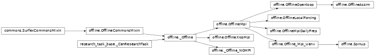
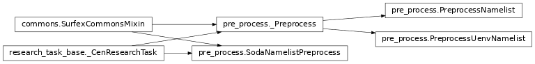
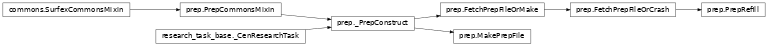
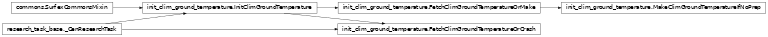

Vortex-cen HPC unit tasks¶
CEN research unit tasks for HPC.
oper_research_mixin.py¶
This modules defines specific CEN common addons for research and operational tasks. Multiple inheritance together with the standard Task class is required to use this module.
- class vortex_cen.tasks.oper_research_mixin.CENTaskMixIn[source]
Bases:
objectUseful methods for any CEN (oper or research) task
- property get_reprod_info
Provide information that should be stored in output files for reproducibility purposes
- reforecast_filter_execution_error(exc)[source]
Define the behaviour in case of errors in the reforecast task.
- s2moper_filter_execution_error(exc)[source]
Define the behaviour in case of errors.
For S2M chain, the errors do not raise exception if the deterministic run and if less than 5 members produce errors. Note than unavailability of members do not produce errors managed by effective_inputs), therefore more than 5 errors is a critical anomaly.
- s2moper_report_execution_error(exc, **kw_infos)[source]
Send error mail in case of fatal errors in the oper chain.
- s2moper_report_execution_warning(exc, **kw_infos)[source]
Send warning mail in case of non-fatal errors in the oper chain.
- class vortex_cen.tasks.oper_research_mixin.CENTaskMixIn[source]¶
Bases:
objectUseful methods for any CEN (oper or research) task
- property get_reprod_info¶
Provide information that should be stored in output files for reproducibility purposes
- reforecast_filter_execution_error(exc)[source]¶
Define the behaviour in case of errors in the reforecast task.
- s2moper_filter_execution_error(exc)[source]¶
Define the behaviour in case of errors.
For S2M chain, the errors do not raise exception if the deterministic run and if less than 5 members produce errors. Note than unavailability of members do not produce errors managed by effective_inputs), therefore more than 5 errors is a critical anomaly.
research_task_base.py¶
Main class used for all CEN HPC research tasks.
- class vortex_cen.tasks.research_task_base._CenResearchTask(*args, **kw)[source]¶
Bases:
Task,CENTaskMixInAbstract class defining the common sequence of actions for CEN’s vortex tasks.
A vortex task is the sequence of actions to execute a single algo component.
It always follows this procedure (definied in the main process method) :
- fetch all necessary input resources (files):
from an archive machine –> on a transfert node (‘early-fetch’)
from the local machine –> on a compute node (‘fetch’)
- execute the algo component (an executable, a script or·a sequence of instructions)
of inputs resources necessary to run an algo component (an executable, a script or a sequence of instructions) –> ‘compute’
- save output resources (files produced or modified by the algo component)
to the local machine –> on a compute node (‘backup’)
to an archive machine –> on a compute node (‘late-backup’)
To implement a new task inheriting from this abstract class, implement a subset of the following methods:
get_remote_inputs
get_local_inputs
algo
launch_algo
put_outputs
See their respective documentation for more details.
Initialise class attributes for dynamic documentation.
- algo()[source]¶
Implement this method to call your task’s algo component. This method should return a valid AlgoComponent object.
- property debug¶
Enter ‘debug’ mode to preserve the working directory even after a succesfull execution.
Associated configuration variable:
debugEnter ‘debug’ mode, default : False type debug: bool
- defaults(extras)[source]¶
Set toolbox defaults, extended with actual arguments
extras.- Parameters:
extras (dict) – items to add to vortex.defaults.
- force_configuration_variables()[source]¶
Implement this method to force the value of some configuration variables in specific use cases of the task. In particular, if an input for the task comes from the output of a previous task in the driver, the “block” of the input is imposed by the output block of the producing task.
- get_forcing(localname='FORCING_[datebegin:ymdh]_[dateend:ymdh].nc', namespace='vortex.multi.fr', fatal=True)[source]¶
Method to get meteorological forcing file(s) covering the simulation period. Look for files covering sub-periods defined by the io_duration configuration variable (current values: “monthly”, “yearly”, “full”)
- Parameters:
localname (str) – local footprint (how to name the file in the working directory). This is an algo/task-specific argument. Default name depends on the actual datebegin/dateend of each file. WARNING : in case a unique value is provided the user should ensure that a single file will be retrieved
namespace (str) – namespace for fetching the forcing files. Default: vortex.multi.fr
Mandatory configuration variables:
forcing_datebegindatebegin footprint, default self.conf.datebegin type forcing_datebegin: str, footprints.stdtypes.FPListforcing_dateenddateend footprint, default self.conf.dateend type forcing_dateend: str, footprints.stdtypes.FPListforcing_xpidExperiment identifier, default self.conf.xpid type forcing_xpid: strforcing_geometrygeometry footprint, default self.conf.geometry type forcing_geometry: str, footprints.stdtypes.FPListforcing_vappvapp footprint, default self.conf.vapp type forcing_vapp: strforcing_vconfvconf footprint, default self.conf.vconf type forcing_vconf: strforcing_blockblock footprint, default “meteo” type forcing_vconf: strforcing_namespacenamespace footprint, default “vortex.multi.fr” (hendrix + local cache) type forcing_namespace: str
Optional configuration variables:
forcing_membermember footprint, default None (or member if provided) type forcing_member: int, footprints.stdtypes.FPListforcing_namebuildnamebuild footprint, default “flat@cen” (will change soon) type forcing_namebuild: str, values: “flat@cen”, “date@cen”, “date@std”forcing_intentintent footprint (local file permissions), default “in” Possible values : “in” (read-only), “inout” (read-write) type forcing_intent: strforcing_datedate footprint corresponding to the rundate of the forcing. Useful to get the forcing of the monthly reanalysis for example. default is forcing_dateend.forcing_source_appsource_app footprint, default None type forcing_source_app: str, footprints.stdtypes.FPListforcing_source_confsource_conf footprint, default None type forcing_source_conf: str, footprints.stdtypes.FPListforcing_sourceRetrieve source_app and source_conf footrprints dictionnaries for S2M reanalysis Possible values : ‘era5’, ‘era40’ type forcing_source: strforcing_cutoffcutoff footprint (to be made optional for SurfaceIO objects), default None type forcing_cutoff: strio_durationArgument similar to the one of the get_list_dates_files method in snowtools/utils/dates.py. Used to retrieve the list of datebegin and dateend for inputs covering sub-periods. Possible values : “yearly”, “monthly” or “full” type io_duration: strforcing_vortex1Boolean to identify resources produced with vortex1 (filename without geometry) type forcing_vortex1: bool
- TODOprévoir un mécanisme pour rendre des déclarer les arguments obligatoires / optionnels pour
chaque tâche (ex: member)
- get_list_dates(duration='yearly')[source]¶
Get the list of datebegin/dateend corresponding to the different time periods covered by IO files from the actual simulation’s datebegin/dateend arguments.
- Parameters:
duration (str) – Time period covered by individual files.
- get_list_members()[source]¶
Return the complete list of ensemble members from either - the exact ‘member’ value (int) –> returns [member] - the ‘members’ list (FPList or list) –> returns the list of members - the number of members ‘nmembers’ (int) –> returns the list of ‘nmembers’ values starting from 1
- get_local_inputs()[source]¶
Implement this method in your task to fetch all resources already stored on the local (HPC) cache from a compute node.
- get_remote_inputs()[source]¶
Implement this method in your task to fetch all resources stored remotely (on Hendrix, sxcen,…) from a transfer node.
- launch_MPI_executable(algo, mpiopts=None)[source]¶
Run executable with MPI.
- Parameters:
algo – AlgoComponent object
mpiopts – dict with MPI options nnodes=…, nprocs=…, ntasks=…
- launch_algo(algo, **kw)[source]¶
Implement this method in your task’s algo component. The implementation should define how to run the algo component, or call one of the standard methods: launch_MPI_executable(), launch_python_algo()
- Parameters:
algo – AlgoComponent object
kw
- launch_executable(algo)[source]¶
run executable without MPI.
- Parameters:
algo – AlgoComponent object
- launch_python_algo(algo, **kw)[source]¶
Run your task’s algo component. For algo components consisting of python code. :param algo: AlgoComponent object :param kw: keyword arguments dict
- property namespace_out¶
Namespace for output toolboxes
- preprocess()[source]¶
Pre-processing step to set usefull class variables.
Associated (optional) configuration variables:
io_durationArgument similar to the one of the get_list_dates_files method in snowtools/utils/dates.py. It is used to retrieve the list of datebegin and dateend footprints for IO covering sub-periods. Possible values : “yearly”, “monthly” or “full” type io_duration: str
configuration_variables.py¶
Documentation of most frequently used configuration variables. See Dynamic documentation of unit tasks for more information on the documentation syntax conventions.
surfex¶
Tasks allowing to launch any SURFEX executable.
commons.py¶
MixIn input common to all SURFEX tasks.
- class vortex_cen.tasks.surfex.commons.SurfexCommonsMixin[source]¶
Bases:
objectMixin class that provides methods to get common SURFEX inputs.
- get_drdt_bst_fit()[source]¶
Get drdt_bst_fit_60.nc from uenv Crocus metamorphism parameters mandatory to run OFFLINE, PREP or PGD
Configuration Variables used:
consts_surfex_uenvor if not presentuenvUser Environment in which the following resources are to be retrieved : - ecoclimapI_covers_param.bin - ecoclimapII_eu_covers_param.binFormat : uenv:{uenv_name}@{user}
- get_ecoclimap()[source]¶
Get ecoclimapI_covers_param.bin, ecoclimapII_eu_covers_param.bin, Binary ECOCLIMAP I files are mandatory to run OFFLINE and taken from the uenv Binary ECOCLIMAP II files are mandatory to run OFFLINE and taken from the uenv
Configuration Variables used:
surfex_uenvor if not presentuenvUser Environment in which the following resources are to be retrieved : - ecoclimapI_covers_param.bin - ecoclimapII_eu_covers_param.binFormat : uenv:{uenv_name}@{user}
geometrygeometry of the forcing file(s) type: str, footprints.stdtypes.FPList
- get_init_TG_from_cache_or_archive(fatal=True, cache_only=False)[source]¶
Method to get an init_tg from the vortex cache or the archive.
- param fatal:
If True, the method raises a fatal error if the file could not be fetched. Default: True. Should be False only in tasks that implement a second option for fetching an init_tg file, for example from an uenv.
- type fatal:
bool
- param cache_only:
If True, the method gets the file from the cache only. Default: False. cache_only=False should be used in tasks that are supposed to fetch an init_tg file as a remote input, or check if such a file already exists for the given experiment. cache_only=True should be used in tasks where the init_tg file is considered a local input, that means that it has been either fetched or produced by a previous task in the driver.
- type cache_only:
bool
- return:
init_tg toolbox
Configuration Variables used:
tg_xpidorxpidexperiment id the init_TG.nc file should be fetched from.tg_username of the user that produced the target the init_TG.nc file. Default: Nonetg_geometryorgeometrygeometry of the init_TG. Logically the same as for the rest of the simulationtg_vapporvappApplication name to search the init_TG.nc file.tg_vconforvconfConfiguration name to search the init_TG.nc file.
- get_init_TG_from_uenv(fatal=True)[source]¶
Fetch an init_TG.nc file from an uenv
- Parameters:
fatal – If True, the method raises a fatal error if the file could not be fetched. Default: True. Should be False only in tasks that implement a second option for fetching an init_tg file, for example from the cache or archive.
- Returns:
init_tg toolbox
Configuration Variables used:
tg_geometryorgeometrygeometry of the init_TG. Logically the same as for the rest of the simulationsurfex_uenvor if not presentuenvUser Environment from which the init_TG.nc file should be fetched.Format : uenv:{uenv_name}@{user}
tg_gvarkey to look up the init_TG.nc file in the uenv the file should come from. Default: climtg_[geometry::area]
- get_namelist()[source]¶
Get the OPTIONS.nam namelist. If an
allow_path=TrueAND anamelist_pathconfiguration variables are provided, fetch the user-provided target file (WARNING : non-reproducible case). In any other case, fetch the namelist from a uenv.
- get_pgd_file_from_cache()[source]¶
In the general research case, the PGD comes from the vortex cache. For “stable” configurations such as the reanalysis, it comes from a UEnv/GEnv.
Configuration Variables used:
pgd_xpidExperiment Identifier of the PGD file, if different from the task’s XPID. defaults toxpid. type: strpgd_vappvapp of the PGD file, if different from the task’s vapp. defaults tovapp. type: strpgd_vconfvconf of the PGD file, if different from the task’s vconf. defaults tovconf. type: strpgd_vortex1True if the pgd file was produced with vortex1 and uses vortex1 naming conventions. default: False type: boolgeometrygeometry of the forcing file(s) type: str, footprints.stdtypes.FPList
- get_pgd_file_from_cache_or_archive(fatal=True)[source]¶
Method to be used in tasks that fetch or try to fetch the pgd file from the cache or archive.
- Parameters:
fatal (bool) – If True, the method raises a fatal error if the file could not be fetched. Default: True. Should be False only in tasks that implement a second option for fetching a pgd file, for example from an uenv.
- Returns:
pgd toolbox
Configuration Variables used:
pgd_xpidExperiment Identifier of the PGD file, if different from the task’s XPID. defaults toxpid. type: strpgd_vappvapp of the PGD file, if different from the task’s vapp. defaults tovapp. type: strpgd_vconfvconf of the PGD file, if different from the task’s vconf. defaults tovconf. type: strpgd_vortex1True if the pgd file was produced with vortex1 and uses vortex1 naming conventions. default: False type: boolpgd_userName of the user who produced the PGD file. Default:None. type: strpgd_geometrygeometry of the pgd file. Default:geometry. type: str, footprints.stdtypes.FPList
- get_pgd_file_from_uenv(fatal=True)[source]¶
Get PGD.nc file from UEnv
- Parameters:
fatal – If True, the method raises a fatal error if the file could not be fetched. Default: True. Should be False only in tasks that implement a second option for fetching a pgd file, for example one archived from a previous experiment.
- Returns:
pgd toolbox
Configuration Variables used:
surfex_uenvor if not presentuenvUser Environment from which the PGD.nc file should be fetched.Format : uenv:{uenv_name}@{user}
pgdnc_gvarvariable name of the pgd file in the uenv. Default: pgd_[geometry::tag].pgd_geometrygeometry of the pgd file. Default:geometry. type: str, footprints.stdtypes.FPList
- get_prep_file_from_cache_or_archive(fatal=True, cache_only=False, local='PREP.nc')[source]¶
Standard method to get a PREP file from the cache or archive. The PREP.nc file contains the initial conditions of the snowpack at the beginning of the simulation.
- Parameters:
fatal (bool) – If True, the method raises a fatal error if the file could not be fetched. Default: True. Should be False only in tasks that implement a second option for fetching a pgd file, for example from an uenv.
cache_only (bool) – If True, the method gets the PREP file from the cache only. Default: False. cache_only=False should be used in tasks that are supposed to fetch a PREP file as a remote input, or check if such a file already exists for the given experiment. cache_only=True should be used in tasks where the prep file is considered a local input, that means that it has been either fetched or produced by a previous task in the driver.
- Returns:
a toolbox input with the PREP file.
Configuration Variables used:
prep_xpidorxpidExperiment id the prep file should be searched for or put in cache.prep_username of the user who produced the PREP file. Default: None.prep_datevalidityordatebeginValidity date of the prep file. Default isdatebegin.prep_vapporvappApplication name to search the PREP.nc file.prep_vconforvconfConfiguration name to search the PREP.nc file.prep_vortex1type: bool. True if the requested PREP.nc file was produced with vortex 1 and thus uses vortex 1 naming conventions. Default is False.prep_geometryorgeometrygeometry of the PREP file.prep_namebuildDefault: flat@cenprep_blockblock part of the data tree to search for the PREP.nc file. Default isprep.prep_memberormemberIf the PREP.nc file comes from an ensemble, a member can be chosen. Default isNone.prep_cutoffCan be used to select a PREP file coming from an operational forecast (forecast) oranalysis (assimilation). Default is None. Might be useful for reforecasts.
offline.py¶
Tasks designed to launch the OFFLINE executable with MPI parallelisation.

- class vortex_cen.tasks.surfex.offline.OfflineCommonsMixin[source]¶
Bases:
SurfexCommonsMixinCommon OFFLINE-specific IO resources.
- get_executable_from_path(fatal=True)[source]¶
Get OFFLINE executable locally
- Parameters:
fatal (bool) – If True, fails if the executable was not found. Default: True
Configuration variables used:
exesurfexabsolute path to the OFFLINE executable type: str
- get_executable_from_uenv(mpi=True, fatal=True)[source]¶
Get OFFLINE executable from Uenv
- Parameters:
mpi (bool) – If True, fetch offline executable with MPI support named master_offline_mpi, if False, fetch offline executable without MPI support named master_offline_nompi. The names can be overwritten using the
offline_gvarconfiguration variable. Default: Truefatal (bool) – If True, fails if the executable was not found. Default: True
Configuration variables used:
surfex_uenvoruenvoffline_gvaror one of master_offline_mpi or master_offline_nompi depending on the value of the mpi parameter.
- class vortex_cen.tasks.surfex.offline._Offline(*args, **kw)[source]¶
Bases:
OfflineCommonsMixin,_CenResearchTaskTask: _Offline
Abstract task for OFFLINE binary execution.
SURFEX/OFFLINE documentation : https://umr-cnrm.github.io/snowtools-doc/misc/surfex.html
Inputs:
FORCING.nc files(s) (near-surface meteorological conditions during the simulation period)
OPTIONS.nam ready-to-use SURFEX namelist (coming from an execution of a “Preprocess_Task”)
ecoclimapI_covers_param.bin and ecoclimapII_eu_covers_param.bin (binaries for vegetation generation)
drdt_bst_fit_60.nc (Crocus metamorphism parameters)
PGD.nc (Ground physiography)
PREP.nc (initial conditions)
Outputs:
PRO.nc Snowpack simulations covering the entire simulation period
PREP.nc SURFEX/Crocus model state variables at the end of the simulation
CUMUL.nc TODO Compléter et CHECKER la doc
DIAG.nc TODO Compléter et CHECKER la doc
Mandatory configuration variables:
datebegindatebegin of the forcing file(s). type: str, footprints.stdtypes.FPListdateenddateend of the forcing files(s). type: str, footprints.stdtypes.FPListgeometrygeometry of the forcing file(s) type: str, footprints.stdtypes.FPListxpidUser-defined Experiment identifier (WARNING : 4-digit strings prohibited) type: strsurfex_uenvoruenvUser Environment in which the following resources are to be retrieved:ecoclimapI_covers_param.bin
ecoclimapII_eu_covers_param.bin
drdt_bst_fit_60.nc
OFFLINE executable
Format : uenv:{uenv_name}@{user} type: str
nprocsNumber of process to allocate to the execution of the MPI binary type: intntasksNumber of tasks to allocate to the execution of the MPI binary type: int
Optional configuration variables (other than forcing-specific ones):
exesurfexPath to the executable if it should come from a local path.offline_gvarspecify the name of the offline executable in the uenv. Default ismaster_offline_mpiif the mpi parameter is True andmaster_offline_nompiotherwise.memberSimulation member. NB : This is a deterministic task, only one single member value can be provided type: intpgd_xpidExperiment Identifier of the PGD file, if different from the task’s XPID type: strpgd_userUser who produced the target PGD file. type: strpgd_vappvapp of the PGD file, if different from the task’s vapp type: strpgd_vconfvconf of the PGD file, if different from the task’s vconf type: strprep_xpidExperiment Identifier of the PREP file, if different from the task’s XPID type: strprep_userUser who produced the target PREP file. type: strprep_memberMember associated to the PREP file if it comes from an ensemble (after a SODA run) NB : This is a deterministic task, only one single member value can be provided type: intprep_vappvapp of the PREP file, if different from the task’s vapp type: strprep_vconfvconf of the PREP file, if different from the task’s vconf type: strprep_datevalidityValidity date of the PREP file (if different from datebegin) type: strprep_blockblock of the PREP file (default ‘prep’, but can be different after an assimilation step) type: strprep_vortex1Boolean to identify resources produced with vortex1 (filename without geometry) type: boolaugust_thresholdThreshold to apply to the snow water equivalent (in kg/m2) each 1st August (default: -999) type: intdailyprepTODO :comprendre avec Matthieu L les cas d’usages avec “dailyprep” (reforecast ?) type: booldrhookActivate / deactivate the profiling with DRHOOK (default: False) type: boolnamespace_outForce specific namespace for output files (default: ‘vortex.multi.fr’) type: strnnodesNumber of available nodes for MPI parallelisation type: intnprocsNumber of available processors for MPI parallelisation type: intntasksNumber of MPI tasks type: intio_durationArgument similar to the one of the get_list_dates_files method in snowtools/utils/dates.py. Used to retrieve the list of datebegin and dateend for IO covering sub-periods. Possible values : “yearly”, “monthly” or “full” type: strdiff_xpidExperiment id of the reference file used for reproducibility test. type diff_xpid: strdiff_useruser name associated with the reference file used for reproducibility test (only if different from current user). Default: None type diff_user: strdiff_blockblock of the reference file used for reproducibility test
Forcing related configuration variables:
Mandatory
forcing_datebegindatebegin footprint, default self.conf.datebegin type forcing_datebegin: str, footprints.stdtypes.FPListforcing_dateenddateend footprint, default self.conf.dateend type forcing_dateend: str, footprints.stdtypes.FPListforcing_xpidExperiment identifier, default self.conf.xpid type forcing_xpid: strforcing_geometrygeometry footprint, default self.conf.geometry type forcing_geometry: str, footprints.stdtypes.FPListforcing_vappvapp footprint, default self.conf.vapp type forcing_vapp: strforcing_vconfvconf footprint, default self.conf.vconf type forcing_vconf: strforcing_blockblock footprint, default “meteo” type forcing_vconf: strforcing_namespacenamespace footprint, default “vortex.multi.fr” (hendrix + local cache) type forcing_namespace: strforcing_datedate footprint (unsed with the research namebuilders), default to [dateend] type forcing_date: str
Optional
forcing_membermember footprint, default None (or member if provided) type forcing_member: int, footprints.stdtypes.FPListforcing_namebuildnamebuild footprint, default “flat@cen” (will change soon) type forcing_namebuild: strforcing_intentintent footprint (local file permissions), default “in” Possible values: “in” (read-only), “inout” (read-write) type forcing_intent: strforcing_source_appsource_app footprint, default None type forcing_source_app: str, footprints.stdtypes.FPListforcing_source_confsource_conf footprint, default None type forcing_source_conf: str, footprints.stdtypes.FPListforcing_sourceRetrieve source_app and source_conf footrprints dictionnaries for S2M reanalysis Possible values: ‘era5’, ‘era40’ type forcing_source: strforcing_cutoffcutoff footprint (to be made optional for SurfaceIO objects), default None type forcing_cutoff: strio_durationArgument similar to the one of the get_list_dates_files method in snowtools/utils/dates.py. Used to retrieve the list of datebegin and dateend for inputs covering sub-periods. Possible values: “yearly”, “monthly” or “full” type io_duration: strforcing_vortex1Boolean to identify resources produced with vortex1 (filename without geometry) type forcing_vortex1: bool
- class vortex_cen.tasks.surfex.offline.OfflineMpi(*args, **kw)[source]¶
Bases:
_OfflineTask: OfflineMpi
Task for the execution of OFFLINE binary with MPI parallelisation.
Inputs:
FORCING.nc files(s) (near-surface meteorological conditions during the simulation period)
OPTIONS.nam ready-to-use SURFEX namelist (coming from an execution of a “Preprocess_Task”)
ecoclimapI_covers_param.bin and ecoclimapII_eu_covers_param.bin (binaries for vegetation generation)
drdt_bst_fit_60.nc (Crocus metamorphism parameters)
PGD.nc (Ground physiography)
PREP.nc (initial conditions)
Outputs:
PRO.nc Snowpack simulations covering the entire simulation period
PREP.nc SURFEX/Crocus model state variables at the end of the simulation
CUMUL.nc TODO Compléter et CHECKER la doc
DIAG.nc TODO Compléter et CHECKER la doc
Mandatory configuration variables:
datebegindatebegin of the forcing file(s). type: str, footprints.stdtypes.FPListdateenddateend of the forcing files(s). type: str, footprints.stdtypes.FPListgeometrygeometry of the forcing file(s) type: str, footprints.stdtypes.FPListxpidUser-defined Experiment identifier (WARNING : 4-digit strings prohibited) type: strsurfex_uenvoruenvUser Environment in which the following resources are to be retrieved:ecoclimapI_covers_param.bin
ecoclimapII_eu_covers_param.bin
drdt_bst_fit_60.nc
OFFLINE executable
Format : uenv:{uenv_name}@{user} type: str
nprocsNumber of process to allocate to the execution of the MPI binary type: intntasksNumber of tasks to allocate to the execution of the MPI binary type: int
Optional configuration variables (other than forcing-specific ones):
exesurfexPath to the executable if it should come from a local path.offline_gvarspecify the name of the offline executable in the uenv. Default ismaster_offline_mpiif the mpi parameter is True andmaster_offline_nompiotherwise.memberSimulation member. NB : This is a deterministic task, only one single member value can be provided type: intpgd_xpidExperiment Identifier of the PGD file, if different from the task’s XPID type: strpgd_userUser who produced the target PGD file. type: strpgd_vappvapp of the PGD file, if different from the task’s vapp type: strpgd_vconfvconf of the PGD file, if different from the task’s vconf type: strprep_xpidExperiment Identifier of the PREP file, if different from the task’s XPID type: strprep_userUser who produced the target PREP file. type: strprep_memberMember associated to the PREP file if it comes from an ensemble (after a SODA run) NB : This is a deterministic task, only one single member value can be provided type: intprep_vappvapp of the PREP file, if different from the task’s vapp type: strprep_vconfvconf of the PREP file, if different from the task’s vconf type: strprep_datevalidityValidity date of the PREP file (if different from datebegin) type: strprep_blockblock of the PREP file (default ‘prep’, but can be different after an assimilation step) type: strprep_vortex1Boolean to identify resources produced with vortex1 (filename without geometry) type: boolaugust_thresholdThreshold to apply to the snow water equivalent (in kg/m2) each 1st August (default: -999) type: intdailyprepTODO :comprendre avec Matthieu L les cas d’usages avec “dailyprep” (reforecast ?) type: booldrhookActivate / deactivate the profiling with DRHOOK (default: False) type: boolnamespace_outForce specific namespace for output files (default: ‘vortex.multi.fr’) type: strnnodesNumber of available nodes for MPI parallelisation type: intnprocsNumber of available processors for MPI parallelisation type: intntasksNumber of MPI tasks type: intio_durationArgument similar to the one of the get_list_dates_files method in snowtools/utils/dates.py. Used to retrieve the list of datebegin and dateend for IO covering sub-periods. Possible values : “yearly”, “monthly” or “full” type: strdiff_xpidExperiment id of the reference file used for reproducibility test. type diff_xpid: strdiff_useruser name associated with the reference file used for reproducibility test (only if different from current user). Default: None type diff_user: strdiff_blockblock of the reference file used for reproducibility test
Forcing related configuration variables:
Mandatory
forcing_datebegindatebegin footprint, default self.conf.datebegin type forcing_datebegin: str, footprints.stdtypes.FPListforcing_dateenddateend footprint, default self.conf.dateend type forcing_dateend: str, footprints.stdtypes.FPListforcing_xpidExperiment identifier, default self.conf.xpid type forcing_xpid: strforcing_geometrygeometry footprint, default self.conf.geometry type forcing_geometry: str, footprints.stdtypes.FPListforcing_vappvapp footprint, default self.conf.vapp type forcing_vapp: strforcing_vconfvconf footprint, default self.conf.vconf type forcing_vconf: strforcing_blockblock footprint, default “meteo” type forcing_vconf: strforcing_namespacenamespace footprint, default “vortex.multi.fr” (hendrix + local cache) type forcing_namespace: strforcing_datedate footprint (unsed with the research namebuilders), default to [dateend] type forcing_date: str
Optional
forcing_membermember footprint, default None (or member if provided) type forcing_member: int, footprints.stdtypes.FPListforcing_namebuildnamebuild footprint, default “flat@cen” (will change soon) type forcing_namebuild: strforcing_intentintent footprint (local file permissions), default “in” Possible values: “in” (read-only), “inout” (read-write) type forcing_intent: strforcing_source_appsource_app footprint, default None type forcing_source_app: str, footprints.stdtypes.FPListforcing_source_confsource_conf footprint, default None type forcing_source_conf: str, footprints.stdtypes.FPListforcing_sourceRetrieve source_app and source_conf footrprints dictionnaries for S2M reanalysis Possible values: ‘era5’, ‘era40’ type forcing_source: strforcing_cutoffcutoff footprint (to be made optional for SurfaceIO objects), default None type forcing_cutoff: strio_durationArgument similar to the one of the get_list_dates_files method in snowtools/utils/dates.py. Used to retrieve the list of datebegin and dateend for inputs covering sub-periods. Possible values: “yearly”, “monthly” or “full” type io_duration: strforcing_vortex1Boolean to identify resources produced with vortex1 (filename without geometry) type forcing_vortex1: bool
- class vortex_cen.tasks.surfex.offline._Offline_NOMPI(*args, **kw)[source]¶
Bases:
_OfflineTask : _Offline_NOMPI
Abstract task for the execution of OFFLINE binary without MPI parallelisation.
Inputs:
FORCING.nc files(s) (near-surface meteorological conditions during the simulation period)
OPTIONS.nam ready-to-use SURFEX namelist (coming from an execution of a “Preprocess_Task”)
ecoclimapI_covers_param.bin and ecoclimapII_eu_covers_param.bin (binaries for vegetation generation)
drdt_bst_fit_60.nc (Crocus metamorphism parameters)
PGD.nc (Ground physiography)
PREP.nc (initial conditions)
Outputs:
PRO.nc Snowpack simulations covering the entire simulation period
PREP.nc SURFEX/Crocus model state variables at the end of the simulation
CUMUL.nc TODO Compléter et CHECKER la doc
DIAG.nc TODO Compléter et CHECKER la doc
Mandatory configuration variables:
datebegindatebegin of the forcing file(s). type: str, footprints.stdtypes.FPListdateenddateend of the forcing files(s). type: str, footprints.stdtypes.FPListgeometrygeometry of the forcing file(s) type: str, footprints.stdtypes.FPListxpidUser-defined Experiment identifier (WARNING : 4-digit strings prohibited) type: strsurfex_uenvoruenvUser Environment in which the following resources are to be retrieved:ecoclimapI_covers_param.bin
ecoclimapII_eu_covers_param.bin
drdt_bst_fit_60.nc
OFFLINE executable
Format : uenv:{uenv_name}@{user} type: str
nprocsNumber of process to allocate to the execution of the MPI binary type: intntasksNumber of tasks to allocate to the execution of the MPI binary type: int
Optional configuration variables (other than forcing-specific ones):
exesurfexPath to the executable if it should come from a local path.offline_gvarspecify the name of the offline executable in the uenv. Default ismaster_offline_mpiif the mpi parameter is True andmaster_offline_nompiotherwise.memberSimulation member. NB : This is a deterministic task, only one single member value can be provided type: intpgd_xpidExperiment Identifier of the PGD file, if different from the task’s XPID type: strpgd_userUser who produced the target PGD file. type: strpgd_vappvapp of the PGD file, if different from the task’s vapp type: strpgd_vconfvconf of the PGD file, if different from the task’s vconf type: strprep_xpidExperiment Identifier of the PREP file, if different from the task’s XPID type: strprep_userUser who produced the target PREP file. type: strprep_memberMember associated to the PREP file if it comes from an ensemble (after a SODA run) NB : This is a deterministic task, only one single member value can be provided type: intprep_vappvapp of the PREP file, if different from the task’s vapp type: strprep_vconfvconf of the PREP file, if different from the task’s vconf type: strprep_datevalidityValidity date of the PREP file (if different from datebegin) type: strprep_blockblock of the PREP file (default ‘prep’, but can be different after an assimilation step) type: strprep_vortex1Boolean to identify resources produced with vortex1 (filename without geometry) type: boolaugust_thresholdThreshold to apply to the snow water equivalent (in kg/m2) each 1st August (default: -999) type: intdailyprepTODO :comprendre avec Matthieu L les cas d’usages avec “dailyprep” (reforecast ?) type: booldrhookActivate / deactivate the profiling with DRHOOK (default: False) type: boolnamespace_outForce specific namespace for output files (default: ‘vortex.multi.fr’) type: strio_durationArgument similar to the one of the get_list_dates_files method in snowtools/utils/dates.py. Used to retrieve the list of datebegin and dateend for IO covering sub-periods. Possible values : “yearly”, “monthly” or “full” type: strdiff_xpidExperiment id of the reference file used for reproducibility test. type diff_xpid: strdiff_useruser name associated with the reference file used for reproducibility test (only if different from current user). Default: None type diff_user: strdiff_blockblock of the reference file used for reproducibility test
Forcing related configuration variables:
Mandatory
forcing_datebegindatebegin footprint, default self.conf.datebegin type forcing_datebegin: str, footprints.stdtypes.FPListforcing_dateenddateend footprint, default self.conf.dateend type forcing_dateend: str, footprints.stdtypes.FPListforcing_xpidExperiment identifier, default self.conf.xpid type forcing_xpid: strforcing_geometrygeometry footprint, default self.conf.geometry type forcing_geometry: str, footprints.stdtypes.FPListforcing_vappvapp footprint, default self.conf.vapp type forcing_vapp: strforcing_vconfvconf footprint, default self.conf.vconf type forcing_vconf: strforcing_blockblock footprint, default “meteo” type forcing_vconf: strforcing_namespacenamespace footprint, default “vortex.multi.fr” (hendrix + local cache) type forcing_namespace: strforcing_datedate footprint (unsed with the research namebuilders), default to [dateend] type forcing_date: str
Optional
forcing_membermember footprint, default None (or member if provided) type forcing_member: int, footprints.stdtypes.FPListforcing_namebuildnamebuild footprint, default “flat@cen” (will change soon) type forcing_namebuild: strforcing_intentintent footprint (local file permissions), default “in” Possible values: “in” (read-only), “inout” (read-write) type forcing_intent: strforcing_source_appsource_app footprint, default None type forcing_source_app: str, footprints.stdtypes.FPListforcing_source_confsource_conf footprint, default None type forcing_source_conf: str, footprints.stdtypes.FPListforcing_sourceRetrieve source_app and source_conf footrprints dictionnaries for S2M reanalysis Possible values: ‘era5’, ‘era40’ type forcing_source: strforcing_cutoffcutoff footprint (to be made optional for SurfaceIO objects), default None type forcing_cutoff: strio_durationArgument similar to the one of the get_list_dates_files method in snowtools/utils/dates.py. Used to retrieve the list of datebegin and dateend for inputs covering sub-periods. Possible values: “yearly”, “monthly” or “full” type io_duration: strforcing_vortex1Boolean to identify resources produced with vortex1 (filename without geometry) type forcing_vortex1: bool
- class vortex_cen.tasks.surfex.offline.Offline_Mpi_Uenv(*args, **kw)[source]¶
Bases:
OfflineMpiTask: Offline_MPI_Uenv
Get OFFLINE executable from a User Environment.
NB: This is the task to use to guarantee the simulation’s reproductibility
- class vortex_cen.tasks.surfex.offline.OfflineMpiDailyPrep(*args, **kw)[source]¶
Bases:
OfflineMpiDo a surfex simulation with daily prep file output.
Inputs:
FORCING.nc files(s) (near-surface meteorological conditions during the simulation period)
OPTIONS.nam ready-to-use SURFEX namelist (coming from an execution of a “Preprocess_Task”)
ecoclimapI_covers_param.bin and ecoclimapII_eu_covers_param.bin (binaries for vegetation generation)
drdt_bst_fit_60.nc (Crocus metamorphism parameters)
PGD.nc (Ground physiography)
PREP.nc (initial conditions)
Outputs:
PRO.nc Snowpack simulations covering the entire simulation period
PREP.nc SURFEX/Crocus model state variables at the end of the simulation
CUMUL.nc TODO Compléter et CHECKER la doc
DIAG.nc TODO Compléter et CHECKER la doc
Mandatory configuration variables:
datebegindatebegin of the forcing file(s). type: str, footprints.stdtypes.FPListdateenddateend of the forcing files(s). type: str, footprints.stdtypes.FPListgeometrygeometry of the forcing file(s) type: str, footprints.stdtypes.FPListxpidUser-defined Experiment identifier (WARNING : 4-digit strings prohibited) type: strsurfex_uenvoruenvUser Environment in which the following resources are to be retrieved:ecoclimapI_covers_param.bin
ecoclimapII_eu_covers_param.bin
drdt_bst_fit_60.nc
OFFLINE executable
Format : uenv:{uenv_name}@{user} type: str
nprocsNumber of process to allocate to the execution of the MPI binary type: intntasksNumber of tasks to allocate to the execution of the MPI binary type: int
Optional configuration variables (other than forcing-specific ones):
offline_gvarspecify the name of the offline executable in the uenv. Default ismaster_offline_mpiif the mpi parameter is True andmaster_offline_nompiotherwise.memberSimulation member. NB : This is a deterministic task, only one single member value can be provided type: intpgd_xpidExperiment Identifier of the PGD file, if different from the task’s XPID type: strpgd_userUser who produced the target PGD file. type: strpgd_vappvapp of the PGD file, if different from the task’s vapp type: strpgd_vconfvconf of the PGD file, if different from the task’s vconf type: strprep_xpidExperiment Identifier of the PREP file, if different from the task’s XPID type: strprep_userUser who produced the target PREP file. type: strprep_memberMember associated to the PREP file if it comes from an ensemble (after a SODA run) NB : This is a deterministic task, only one single member value can be provided type: intprep_vappvapp of the PREP file, if different from the task’s vapp type: strprep_vconfvconf of the PREP file, if different from the task’s vconf type: strprep_datevalidityValidity date of the PREP file (if different from datebegin) type: strprep_blockblock of the PREP file (default ‘prep’, but can be different after an assimilation step) type: strprep_vortex1Boolean to identify resources produced with vortex1 (filename without geometry) type: boolaugust_thresholdThreshold to apply to the snow water equivalent (in kg/m2) each 1st August (default: -999) type: intdailyprepTODO :comprendre avec Matthieu L les cas d’usages avec “dailyprep” (reforecast ?) type: booldrhookActivate / deactivate the profiling with DRHOOK (default: False) type: boolnamespace_outForce specific namespace for output files (default: ‘vortex.multi.fr’) type: strnnodesNumber of available nodes for MPI parallelisation type: intnprocsNumber of available processors for MPI parallelisation type: intntasksNumber of MPI tasks type: intio_durationArgument similar to the one of the get_list_dates_files method in snowtools/utils/dates.py. Used to retrieve the list of datebegin and dateend for IO covering sub-periods. Possible values : “yearly”, “monthly” or “full” type: strdiff_xpidExperiment id of the reference file used for reproducibility test. type diff_xpid: strdiff_useruser name associated with the reference file used for reproducibility test (only if different from current user). Default: None type diff_user: strdiff_blockblock of the reference file used for reproducibility test
Forcing related configuration variables:
Mandatory
forcing_datebegindatebegin footprint, default self.conf.datebegin type forcing_datebegin: str, footprints.stdtypes.FPListforcing_dateenddateend footprint, default self.conf.dateend type forcing_dateend: str, footprints.stdtypes.FPListforcing_xpidExperiment identifier, default self.conf.xpid type forcing_xpid: strforcing_geometrygeometry footprint, default self.conf.geometry type forcing_geometry: str, footprints.stdtypes.FPListforcing_vappvapp footprint, default self.conf.vapp type forcing_vapp: strforcing_vconfvconf footprint, default self.conf.vconf type forcing_vconf: strforcing_blockblock footprint, default “meteo” type forcing_vconf: strforcing_namespacenamespace footprint, default “vortex.multi.fr” (hendrix + local cache) type forcing_namespace: strforcing_datedate footprint (unsed with the research namebuilders), default to [dateend] type forcing_date: str
Optional
forcing_membermember footprint, default None (or member if provided) type forcing_member: int, footprints.stdtypes.FPListforcing_namebuildnamebuild footprint, default “flat@cen” (will change soon) type forcing_namebuild: strforcing_intentintent footprint (local file permissions), default “in” Possible values: “in” (read-only), “inout” (read-write) type forcing_intent: strforcing_source_appsource_app footprint, default None type forcing_source_app: str, footprints.stdtypes.FPListforcing_source_confsource_conf footprint, default None type forcing_source_conf: str, footprints.stdtypes.FPListforcing_sourceRetrieve source_app and source_conf footrprints dictionnaries for S2M reanalysis Possible values: ‘era5’, ‘era40’ type forcing_source: strforcing_cutoffcutoff footprint (to be made optional for SurfaceIO objects), default None type forcing_cutoff: strio_durationArgument similar to the one of the get_list_dates_files method in snowtools/utils/dates.py. Used to retrieve the list of datebegin and dateend for inputs covering sub-periods. Possible values: “yearly”, “monthly” or “full” type io_duration: strforcing_vortex1Boolean to identify resources produced with vortex1 (filename without geometry) type forcing_vortex1: bool
- class vortex_cen.tasks.surfex.offline.OfflineAssim(*args, **kw)[source]¶
Bases:
OfflineOpenloopThis is the task for an OFFLINE-MPI execution after a snow data assimilation step. Each simulaiton member is initialised by a different PREP file identified by its member value.
- class vortex_cen.tasks.surfex.offline.OfflineOpenloop(*args, **kw)[source]¶
Bases:
OfflineMpiThis is the task for an OFFLINE-MPI execution before any data assimilation. All members are initialised by the same PREP file, not associated to any member.
- class vortex_cen.tasks.surfex.offline.OfflineLocalForcing(*args, **kw)[source]¶
Bases:
OfflineMpiTask : OfflineLocalForcing
SURFEX/OFFLINE documentation : https://umr-cnrm.github.io/snowtools-doc/misc/surfex.html
Inputs:
FORCING.nc files(s) (near-surface meteorological conditions during the simulation period)
OPTIONS.nam ready-to-use SURFEX namelist (coming from the execution of the “PreProcess”)
ecoclimapI_covers_param.bin and ecoclimapII_eu_covers_param.bin (binaries for vegetation generation)
drdt_bst_fit_60.nc (Crocus metamorphism parameters)
PGD.nc (Ground physiography) retrieved or produced by the GetPgd1D task
PREP.nc (initial conditions) retrieved or produced by the GetPrep task
Outputs:
PRO.nc Snowpack simulations covering the entire simulation period
PREP.nc SURFEX/Crocus model state variables at the end of the simulation
offline_ensemble.py¶
Tasks designed to launch an OFFLINE executable WITHOUT MPI parallelisation several time in parallel.
- class vortex_cen.tasks.surfex.offline_ensemble.Escroc(*args, **kw)[source]¶
Bases:
_OfflineTask : Escroc
Multiple executions of an OFFLINE binary with a single meteorological FORCING but different Crocus physics (namelists) and no MPI parallelization.
Lafaysse et al. (2017) : https://tc.copernicus.org/articles/11/1173/2017/
Inputs:
FORCING.nc files(s) (near-surface meteorological conditions during the simulation period)
OPTIONS.nam ready-to-use SURFEX namelist (coming from an execution of a “Preprocess_Task”)
ecoclimapI_covers_param.bin and ecoclimapII_eu_covers_param.bin (binaries for vegetation generation)
drdt_bst_fit_60.nc (Crocus metamorphism parameters)
PGD.nc (Ground physiography)
PREP.nc (initial conditions)
Outputs:
PRO.nc Snowpack simulations covering the entire simulation period
PREP.nc SURFEX/Crocus model state variables at the end of the simulation
CUMUL.nc TODO Compléter et CHECKER la doc
DIAG.nc TODO Compléter et CHECKER la doc
Mandatory configuration variables:
datebegindatebegin of the forcing file(s). type: str, footprints.stdtypes.FPListdateenddateend of the forcing files(s). type: str, footprints.stdtypes.FPListgeometrygeometry of the forcing file(s) type: str, footprints.stdtypes.FPListxpidUser-defined Experiment identifier (WARNING : 4-digit strings prohibited) type: strsurfex_uenvoruenvUser Environment in which the following resources are to be retrieved:ecoclimapI_covers_param.bin
ecoclimapII_eu_covers_param.bin
drdt_bst_fit_60.nc
OFFLINE executable
Format : uenv:{uenv_name}@{user} type: str
nmembersnumber of ensemble members.
Optional configuration variables (other than forcing-specific ones):
exesurfexPath to the executable if it should come from a local path.offline_gvarspecify the name of the offline executable in the uenv. Default ismaster_offline_mpiif the mpi parameter is True andmaster_offline_nompiotherwise.memberSimulation member. NB : This is a deterministic task, only one single member value can be provided type: intpgd_xpidExperiment Identifier of the PGD file, if different from the task’s XPID type: strpgd_userUser who produced the target PGD file. type: strpgd_vappvapp of the PGD file, if different from the task’s vapp type: strpgd_vconfvconf of the PGD file, if different from the task’s vconf type: strprep_xpidExperiment Identifier of the PREP file, if different from the task’s XPID type: strprep_userUser who produced the target PREP file. type: strprep_memberMember associated to the PREP file if it comes from an ensemble (after a SODA run) NB : This is a deterministic task, only one single member value can be provided type: intprep_vappvapp of the PREP file, if different from the task’s vapp type: strprep_vconfvconf of the PREP file, if different from the task’s vconf type: strprep_datevalidityValidity date of the PREP file (if different from datebegin) type: strprep_blockblock of the PREP file (default ‘prep’, but can be different after an assimilation step) type: strprep_vortex1Boolean to identify resources produced with vortex1 (filename without geometry) type: boolaugust_thresholdThreshold to apply to the snow water equivalent (in kg/m2) each 1st August (default: -999) type: intdailyprepTODO :comprendre avec Matthieu L les cas d’usages avec “dailyprep” (reforecast ?) type: booldrhookActivate / deactivate the profiling with DRHOOK (default: False) type: boolnamespace_outForce specific namespace for output files (default: ‘vortex.multi.fr’) type: strnnodesNumber of available nodes for MPI parallelisation type: intnprocsNumber of available processors for MPI parallelisation type: intntasksNumber of MPI tasks type: intio_durationArgument similar to the one of the get_list_dates_files method in snowtools/utils/dates.py. Used to retrieve the list of datebegin and dateend for IO covering sub-periods. Possible values : “yearly”, “monthly” or “full” type: strdiff_xpidExperiment id of the reference file used for reproducibility test. type diff_xpid: strdiff_useruser name associated with the reference file used for reproducibility test (only if different from current user). Default: None type diff_user: strdiff_blockblock of the reference file used for reproducibility testsubensembleName of the predefined escroc sub-ensemble to use. typ: str, default: “E2”output_storageName of the archive/server where the output files will be stored. type: str
Forcing related configuration variables:
Mandatory
forcing_datebegindatebegin footprint, default self.conf.datebegin type forcing_datebegin: str, footprints.stdtypes.FPListforcing_dateenddateend footprint, default self.conf.dateend type forcing_dateend: str, footprints.stdtypes.FPListforcing_xpidExperiment identifier, default self.conf.xpid type forcing_xpid: strforcing_geometrygeometry footprint, default self.conf.geometry type forcing_geometry: str, footprints.stdtypes.FPListforcing_vappvapp footprint, default self.conf.vapp type forcing_vapp: strforcing_vconfvconf footprint, default self.conf.vconf type forcing_vconf: strforcing_blockblock footprint, default “meteo” type forcing_vconf: strforcing_namespacenamespace footprint, default “vortex.multi.fr” (hendrix + local cache) type forcing_namespace: strforcing_datedate footprint (unsed with the research namebuilders), default to [dateend] type forcing_date: str
Optional
forcing_membermember footprint, default None (or member if provided) type forcing_member: int, footprints.stdtypes.FPListforcing_namebuildnamebuild footprint, default “flat@cen” (will change soon) type forcing_namebuild: strforcing_intentintent footprint (local file permissions), default “in” Possible values: “in” (read-only), “inout” (read-write) type forcing_intent: strforcing_source_appsource_app footprint, default None type forcing_source_app: str, footprints.stdtypes.FPListforcing_source_confsource_conf footprint, default None type forcing_source_conf: str, footprints.stdtypes.FPListforcing_sourceRetrieve source_app and source_conf footrprints dictionnaries for S2M reanalysis Possible values: ‘era5’, ‘era40’ type forcing_source: strforcing_cutoffcutoff footprint (to be made optional for SurfaceIO objects), default None type forcing_cutoff: strio_durationArgument similar to the one of the get_list_dates_files method in snowtools/utils/dates.py. Used to retrieve the list of datebegin and dateend for inputs covering sub-periods. Possible values: “yearly”, “monthly” or “full” type io_duration: strforcing_vortex1Boolean to identify resources produced with vortex1 (filename without geometry) type forcing_vortex1: bool
- class vortex_cen.tasks.surfex.offline_ensemble.CrocO(*args, **kw)[source]¶
Bases:
EscrocTask : CrocO
Multiple executions of an OFFLINE binary with an ensemble of FORCING files and potentially different Crocus physics (namelists).
This task is strongly linked to the croco driver (vortex_cen/Crocus/assim/drivers/croco.py).
In particular, some configuration variables derived from the list of assimilation dates (configuration variable “assimdates” provided in the configuration file by the user) come from the internal loop within the croco driver : *
assimdate_prevrefers to the assimilation date of the last interation *assimdate(singular !) refers to the assimilation date of the current iteration *assimdate_nextrefers to the assimilation date of the next iterationMandatory configuration variables:
datebegindatebegin of the forcing file(s). type: str, footprints.stdtypes.FPListdateenddateend of the forcing files(s). type: str, footprints.stdtypes.FPListgeometrygeometry of the forcing file(s) type: str, footprints.stdtypes.FPListxpidUser-defined Experiment identifier (WARNING : 4-digit strings prohibited) type: strsurfex_uenvoruenvUser Environment in which the following resources are to be retrieved:ecoclimapI_covers_param.bin
ecoclimapII_eu_covers_param.bin
drdt_bst_fit_60.nc
OFFLINE executable
Format : uenv:{uenv_name}@{user} type: str
nmembersnumber of ensemble members.
Optional configuration variables (other than forcing-specific ones):
exesurfexPath to the executable if it should come from a local path.offline_gvarspecify the name of the offline executable in the uenv. Default ismaster_offline_mpiif the mpi parameter is True andmaster_offline_nompiotherwise.memberSimulation member. NB : This is a deterministic task, only one single member value can be provided type: intpgd_xpidExperiment Identifier of the PGD file, if different from the task’s XPID type: strpgd_userUser who produced the target PGD file. type: strpgd_vappvapp of the PGD file, if different from the task’s vapp type: strpgd_vconfvconf of the PGD file, if different from the task’s vconf type: strprep_xpidExperiment Identifier of the PREP file, if different from the task’s XPID type: strprep_userUser who produced the target PREP file. type: strprep_memberMember associated to the PREP file if it comes from an ensemble (after a SODA run) NB : This is a deterministic task, only one single member value can be provided type: intprep_vappvapp of the PREP file, if different from the task’s vapp type: strprep_vconfvconf of the PREP file, if different from the task’s vconf type: strprep_datevalidityValidity date of the PREP file (if different from datebegin) type: strprep_blockblock of the PREP file (default ‘prep’, but can be different after an assimilation step) type: strprep_vortex1Boolean to identify resources produced with vortex1 (filename without geometry) type: boolaugust_thresholdThreshold to apply to the snow water equivalent (in kg/m2) each 1st August (default: -999) type: intdailyprepTODO :comprendre avec Matthieu L les cas d’usages avec “dailyprep” (reforecast ?) type: booldrhookActivate / deactivate the profiling with DRHOOK (default: False) type: boolnamespace_outForce specific namespace for output files (default: ‘vortex.multi.fr’) type: strnnodesNumber of available nodes for MPI parallelisation type: intnprocsNumber of available processors for MPI parallelisation type: intntasksNumber of MPI tasks type: intio_durationArgument similar to the one of the get_list_dates_files method in snowtools/utils/dates.py. Used to retrieve the list of datebegin and dateend for IO covering sub-periods. Possible values : “yearly”, “monthly” or “full” type: strdiff_xpidExperiment id of the reference file used for reproducibility test. type diff_xpid: strdiff_useruser name associated with the reference file used for reproducibility test (only if different from current user). Default: None type diff_user: strdiff_blockblock of the reference file used for reproducibility testsubensembleName of the predefined escroc sub-ensemble to use. typ: str, default: “E2”output_storageName of the archive/server where the output files will be stored. type: str
Forcing related configuration variables:
Mandatory
forcing_datebegindatebegin footprint, default self.conf.datebegin type forcing_datebegin: str, footprints.stdtypes.FPListforcing_dateenddateend footprint, default self.conf.dateend type forcing_dateend: str, footprints.stdtypes.FPListforcing_xpidExperiment identifier, default self.conf.xpid type forcing_xpid: strforcing_geometrygeometry footprint, default self.conf.geometry type forcing_geometry: str, footprints.stdtypes.FPListforcing_vappvapp footprint, default self.conf.vapp type forcing_vapp: strforcing_vconfvconf footprint, default self.conf.vconf type forcing_vconf: strforcing_blockblock footprint, default “meteo” type forcing_vconf: strforcing_namespacenamespace footprint, default “vortex.multi.fr” (hendrix + local cache) type forcing_namespace: strforcing_datedate footprint (unsed with the research namebuilders), default to [dateend] type forcing_date: str
Optional
forcing_membermember footprint, default None (or member if provided) type forcing_member: int, footprints.stdtypes.FPListforcing_namebuildnamebuild footprint, default “flat@cen” (will change soon) type forcing_namebuild: strforcing_intentintent footprint (local file permissions), default “in” Possible values: “in” (read-only), “inout” (read-write) type forcing_intent: strforcing_source_appsource_app footprint, default None type forcing_source_app: str, footprints.stdtypes.FPListforcing_source_confsource_conf footprint, default None type forcing_source_conf: str, footprints.stdtypes.FPListforcing_sourceRetrieve source_app and source_conf footrprints dictionnaries for S2M reanalysis Possible values: ‘era5’, ‘era40’ type forcing_source: strforcing_cutoffcutoff footprint (to be made optional for SurfaceIO objects), default None type forcing_cutoff: strio_durationArgument similar to the one of the get_list_dates_files method in snowtools/utils/dates.py. Used to retrieve the list of datebegin and dateend for inputs covering sub-periods. Possible values: “yearly”, “monthly” or “full” type io_duration: strforcing_vortex1Boolean to identify resources produced with vortex1 (filename without geometry) type forcing_vortex1: bool
- class vortex_cen.tasks.surfex.offline_ensemble.EscrocResearch(*args, **kw)[source]¶
Bases:
EscrocTask: EscrocResearch
SURFEX/OFFLINE documentation : https://umr-cnrm.github.io/snowtools-doc/misc/surfex.html
Inputs:
FORCING.nc files(s) (near-surface meteorological conditions during the simulation period)
OPTIONS.nam ready-to-use SURFEX namelist (coming from the execution of the “PreProcess”)
ecoclimapI_covers_param.bin and ecoclimapII_eu_covers_param.bin (binaries for vegetation generation)
drdt_bst_fit_60.nc (Crocus metamorphism parameters)
PGD.nc (Ground physiography) retrieved or produced by the GetPgd1D task
PREP.nc (initial conditions) retrieved or produced by the GetPrep task
Outputs:
PRO.nc Snowpack simulations covering the entire simulation period
PREP.nc SURFEX/Crocus model state variables at the end of the simulation
Mandatory configuration variables:
datebegindatebegin of the forcing file(s). type: str, footprints.stdtypes.FPListdateenddateend of the forcing files(s). type: str, footprints.stdtypes.FPListgeometrygeometry of the forcing file(s) type: str, footprints.stdtypes.FPListxpidUser-defined Experiment identifier (WARNING : 4-digit strings prohibited) type: strsurfex_uenvoruenvUser Environment in which the following resources are to be retrieved:ecoclimapI_covers_param.bin
ecoclimapII_eu_covers_param.bin
drdt_bst_fit_60.nc
OFFLINE executable
Format : uenv:{uenv_name}@{user} type: str
nmembersnumber of ensemble members.
Optional configuration variables (other than forcing-specific ones):
exesurfexPath to the executable if it should come from a local path.offline_gvarspecify the name of the offline executable in the uenv. Default ismaster_offline_mpiif the mpi parameter is True andmaster_offline_nompiotherwise.memberSimulation member. NB : This is a deterministic task, only one single member value can be provided type: intpgd_xpidExperiment Identifier of the PGD file, if different from the task’s XPID type: strpgd_userUser who produced the target PGD file. type: strpgd_vappvapp of the PGD file, if different from the task’s vapp type: strpgd_vconfvconf of the PGD file, if different from the task’s vconf type: strprep_xpidExperiment Identifier of the PREP file, if different from the task’s XPID type: strprep_userUser who produced the target PREP file. type: strprep_memberMember associated to the PREP file if it comes from an ensemble (after a SODA run) NB : This is a deterministic task, only one single member value can be provided type: intprep_vappvapp of the PREP file, if different from the task’s vapp type: strprep_vconfvconf of the PREP file, if different from the task’s vconf type: strprep_datevalidityValidity date of the PREP file (if different from datebegin) type: strprep_blockblock of the PREP file (default ‘prep’, but can be different after an assimilation step) type: strprep_vortex1Boolean to identify resources produced with vortex1 (filename without geometry) type: boolaugust_thresholdThreshold to apply to the snow water equivalent (in kg/m2) each 1st August (default: -999) type: intdailyprepTODO :comprendre avec Matthieu L les cas d’usages avec “dailyprep” (reforecast ?) type: booldrhookActivate / deactivate the profiling with DRHOOK (default: False) type: boolnamespace_outForce specific namespace for output files (default: ‘vortex.multi.fr’) type: strnnodesNumber of available nodes for MPI parallelisation type: intnprocsNumber of available processors for MPI parallelisation type: intntasksNumber of MPI tasks type: intio_durationArgument similar to the one of the get_list_dates_files method in snowtools/utils/dates.py. Used to retrieve the list of datebegin and dateend for IO covering sub-periods. Possible values : “yearly”, “monthly” or “full” type: strdiff_xpidExperiment id of the reference file used for reproducibility test. type diff_xpid: strdiff_useruser name associated with the reference file used for reproducibility test (only if different from current user). Default: None type diff_user: strdiff_blockblock of the reference file used for reproducibility testsubensembleName of the predefined escroc sub-ensemble to use. typ: str, default: “E2”output_storageName of the archive/server where the output files will be stored. type: str
Forcing related configuration variables:
Mandatory
forcing_datebegindatebegin footprint, default self.conf.datebegin type forcing_datebegin: str, footprints.stdtypes.FPListforcing_dateenddateend footprint, default self.conf.dateend type forcing_dateend: str, footprints.stdtypes.FPListforcing_xpidExperiment identifier, default self.conf.xpid type forcing_xpid: strforcing_geometrygeometry footprint, default self.conf.geometry type forcing_geometry: str, footprints.stdtypes.FPListforcing_vappvapp footprint, default self.conf.vapp type forcing_vapp: strforcing_vconfvconf footprint, default self.conf.vconf type forcing_vconf: strforcing_blockblock footprint, default “meteo” type forcing_vconf: strforcing_namespacenamespace footprint, default “vortex.multi.fr” (hendrix + local cache) type forcing_namespace: strforcing_datedate footprint (unsed with the research namebuilders), default to [dateend] type forcing_date: str
Optional
forcing_membermember footprint, default None (or member if provided) type forcing_member: int, footprints.stdtypes.FPListforcing_namebuildnamebuild footprint, default “flat@cen” (will change soon) type forcing_namebuild: strforcing_intentintent footprint (local file permissions), default “in” Possible values: “in” (read-only), “inout” (read-write) type forcing_intent: strforcing_source_appsource_app footprint, default None type forcing_source_app: str, footprints.stdtypes.FPListforcing_source_confsource_conf footprint, default None type forcing_source_conf: str, footprints.stdtypes.FPListforcing_sourceRetrieve source_app and source_conf footrprints dictionnaries for S2M reanalysis Possible values: ‘era5’, ‘era40’ type forcing_source: strforcing_cutoffcutoff footprint (to be made optional for SurfaceIO objects), default None type forcing_cutoff: strio_durationArgument similar to the one of the get_list_dates_files method in snowtools/utils/dates.py. Used to retrieve the list of datebegin and dateend for inputs covering sub-periods. Possible values: “yearly”, “monthly” or “full” type io_duration: strforcing_vortex1Boolean to identify resources produced with vortex1 (filename without geometry) type forcing_vortex1: bool
pre_process.py¶
Tasks designed to launch the pre-process the OPTIONS.nam namelist before any SURFEX binary execution.

- class vortex_cen.tasks.surfex.pre_process._Preprocess(*args, **kw)[source]¶
Bases:
SurfexCommonsMixin,_CenResearchTaskTask: _Preprocess
Abstract task for pre-processing namelist: add infos like points and dates from forcing to namelist.
Inputs:
SURFEX namelist (OPTIONS.nam)
FORCING file
Outputs:
Modified and ready-to-use SURFEX namelist
Mandatory configuration variables:
forcing_datebegindatebegin footprint, default self.conf.datebegin type forcing_datebegin: str, footprints.stdtypes.FPListforcing_dateenddateend footprint, default self.conf.dateend type forcing_dateend: str, footprints.stdtypes.FPListforcing_xpidExperiment identifier, default self.conf.xpid type forcing_xpid: strforcing_geometrygeometry footprint, default self.conf.geometry type forcing_geometry: str, footprints.stdtypes.FPListforcing_vappvapp footprint, default self.conf.vapp type forcing_vapp: strforcing_vconfvconf footprint, default self.conf.vconf type forcing_vconf: strforcing_blockblock footprint, default “meteo” type forcing_vconf: strforcing_namespacenamespace footprint, default “vortex.multi.fr” (hendrix + local cache) type forcing_namespace: strforcing_datedate footprint (unsed with the research namebuilders), default to [dateend] type forcing_date: strforcing_modelmodel footprint (to be made optional for SurfaceIO objects), default None type forcing_model: str
Optional configuration variables:
forcing_membermember footprint, default None (or member if provided) type forcing_member: int, footprints.stdtypes.FPListforcing_namebuildnamebuild footprint, default “flat@cen” (will change soon) type forcing_namebuild: strforcing_intentintent footprint (local file permissions), default “in” Possible values: “in” (read-only), “inout” (read-write) type forcing_intent: strforcing_source_appsource_app footprint, default None type forcing_source_app: str, footprints.stdtypes.FPListforcing_source_confsource_conf footprint, default None type forcing_source_conf: str, footprints.stdtypes.FPListforcing_sourceRetrieve source_app and source_conf footrprints dictionnaries for S2M reanalysis Possible values: ‘era5’, ‘era40’ type forcing_source: strforcing_cutoffcutoff footprint (to be made optional for SurfaceIO objects), default None type forcing_cutoff: strio_durationArgument similar to the one of the get_list_dates_files method in snowtools/utils/dates.py. Used to retrieve the list of datebegin and dateend for inputs covering sub-periods. Possible values: “yearly”, “monthly” or “full” type io_duration: strforcing_vortex1Boolean to identify resources produced with vortex1 (filename without geometry) type forcing_vortex1: bool
- class vortex_cen.tasks.surfex.pre_process.PreprocessNamelist(*args, **kw)[source]¶
Bases:
_PreprocessTask: PreprocessNamelist
Task for pre-processing a namelist defined by its absolute path or uenv NB: This is the task to use to guarantee the simulation’s reproductibility
Mandatory configuration variables:
forcing_datebegindatebegin footprint, default self.conf.datebegin type forcing_datebegin: str, footprints.stdtypes.FPListforcing_dateenddateend footprint, default self.conf.dateend type forcing_dateend: str, footprints.stdtypes.FPListforcing_xpidExperiment identifier, default self.conf.xpid type forcing_xpid: strforcing_geometrygeometry footprint, default self.conf.geometry type forcing_geometry: str, footprints.stdtypes.FPListforcing_vappvapp footprint, default self.conf.vapp type forcing_vapp: strforcing_vconfvconf footprint, default self.conf.vconf type forcing_vconf: strforcing_blockblock footprint, default “meteo” type forcing_vconf: strforcing_namespacenamespace footprint, default “vortex.multi.fr” (hendrix + local cache) type forcing_namespace: strforcing_datedate footprint (unsed with the research namebuilders), default to [dateend] type forcing_date: strforcing_modelmodel footprint (to be made optional for SurfaceIO objects), default None type forcing_model: str
Optional configuration variables:
namelist_pathabsolute path to the namelist file if the namelist is not in the uenv.consts_surfex_uenvor if not presentuenvUser Environment from which the namelist file should be fetched. Format : uenv:{uenv_name}@{user}namelist_sourceIn an UEnv, several namelistes can be present in an .tar archive, the source footprint allows to define the exact name of the nameliste to fetch. For example, OPTIONS_default.nam.forcing_membermember footprint, default None (or member if provided) type forcing_member: int, footprints.stdtypes.FPListforcing_namebuildnamebuild footprint, default “flat@cen” (will change soon) type forcing_namebuild: strforcing_intentintent footprint (local file permissions), default “in” Possible values: “in” (read-only), “inout” (read-write) type forcing_intent: strforcing_source_appsource_app footprint, default None type forcing_source_app: str, footprints.stdtypes.FPListforcing_source_confsource_conf footprint, default None type forcing_source_conf: str, footprints.stdtypes.FPListforcing_sourceRetrieve source_app and source_conf footrprints dictionnaries for S2M reanalysis Possible values: ‘era5’, ‘era40’ type forcing_source: strforcing_cutoffcutoff footprint (to be made optional for SurfaceIO objects), default None type forcing_cutoff: strio_durationArgument similar to the one of the get_list_dates_files method in snowtools/utils/dates.py. Used to retrieve the list of datebegin and dateend for inputs covering sub-periods. Possible values: “yearly”, “monthly” or “full” type io_duration: strforcing_vortex1Boolean to identify resources produced with vortex1 (filename without geometry) type forcing_vortex1: bool
- class vortex_cen.tasks.surfex.pre_process.SodaNamelistPreprocess(*args, **kw)[source]¶
Bases:
SurfexCommonsMixin,_CenResearchTaskTask: SodaNamelistPreprocess
Pre-process SURFEX namelist for SODA executable
Inputs:
SODA namelist (OPTIONS.nam)
Outputs:
SODA namelist (OPTIONS.nam)
Mandatory configuration variables
uenvUser Environment in which the namelist is to be retrieved type: strnamelist_sourceName of the namelist in the user environment type: strnmembersNumber of ensemble members in the background state type: intxpidExperiment Identifier type: str
prep.py¶
Tasks designed to launch the PREP executable.

- class vortex_cen.tasks.surfex.prep.PrepCommonsMixin[source]¶
Bases:
SurfexCommonsMixinMixin class prviding methods for fetching a PREP executable.
Optional configuration variables:
surfex_uenvIf the executable should come from an uenv. Default isuenvprep_gvarspecify the name of the PREP executable in the uenv. Default ismaster_prep_mpiif the mpi parameter is True andmaster_prep_nompiotherwise.exesurfexPath to the executable if it should come from a local path.
- get_prep_exe_from_path()[source]¶
Fetch a PREP executable from a local path.
Configuration variables used:
exesurfexPath to the executable if it should come from a local path.
- get_prep_exe_from_uenv(mpi=True, fatal=True)[source]¶
method to get a PREP executable from uenv.
- Parameters:
mpi – True if an executable with MPI support should be fetched, False otherwise. Default is True.
fatal – True if failing to fetch the executable should cause a fatal error, False otherwise. Default is True.
Configuration variables used:
surfex_uenvIf the executable should come from an uenv. Default isuenvprep_gvarspecify the name of the PREP executable in the uenv. Default ismaster_prep_mpiif the mpi parameter is True andmaster_prep_nompiotherwise.
- class vortex_cen.tasks.surfex.prep._PrepConstruct(*args, **kw)[source]¶
Bases:
PrepCommonsMixin,_CenResearchTaskTask: _PrepConstruct
Abstract task for the generation of initial conditions (PREP.nc file)
Inputs:
FORCINGfile (used only to set the simulation’s geometry in the namelist)OPTIONS.namready-to-use SURFEX namelist (coming from an execution of a “Preprocess_Task”)ecoclimapI_covers_param.binandecoclimapII_eu_covers_param.bin(binaries for vegetation generation)drdt_bst_fit_60.nc(Crocus metamorphism parameters)Init_TG.ncInitial values of ground temperature coming from the cache (put there by an execution of an InitClimGroundTemperature or GetClimGroundTemperature task)PGD.ncGround physiography coming from the cache (put there by an execution of a Pgd* task or GetPgd1D task
Outputs:
PREP.nc (initial conditions)
Mandatory configuration variables:
dateDate of validity of the PREP.nc file to generate. Default isdatebegintype: str, Dategeometrygeometry of the forcing file(s) type: str, footprints.stdtypes.FPListxpidExperiment identifier type: strsurfex_uenvor if not presentuenvUser Environment in which the following resources are to be retrieved : - ecoclimapI_covers_param.bin - ecoclimapII_eu_covers_param.bin - drdt_bst_fit_60.nc - PREP executableFormat : uenv:{uenv_name}@{user}
nprocsNumber of process to allocate to the execution of the MPI binary type: intntasksNumber of tasks to allocate to the execution of the MPI binary type: int
Optional configuration variables:
pgd_xpidExperiment Identifier of the PGD file, if different from the task’s XPID type: strpgd_userName of the user who produced the PGD file type: strpgd_vappvapp of the PGD file, if different from the task’s vapp type: strpgd_vconfvconf of the PGD file, if different from the task’s vconf type: strdailyprepTODO :comprendre avec Matthieu L les cas d’usages avec “dailyprep” (reforecast ?) type: boolnamespace_outForce specific namespace for output files (default: ‘vortex.multi.fr’) type: strdiff_xpidExperiment id of the reference file used for reproducibility test. type diff_xpid: strdiff_useruser name associated with the reference file used for reproducibility test (only if different from current user). Default: None type diff_user: str
- class vortex_cen.tasks.surfex.prep.FetchPrepFileOrMake(*args, **kw)[source]¶
Bases:
_PrepConstructTask: FetchPrepFileOrMake
Generation of initial conditions (PREP.nc file) Look if the requested PREP.nc file is available in the cache or archive. If not, calculate it. The output is put to the cache but not archived! Use the MakePrepFile class to generate and archive a PREP.nc file
WARNING : The simulation’s reproducibility can not be guaranteed with this task!
Inputs:
OPTIONS.namready-to-use SURFEX namelist (coming from an execution of a “Preprocess_Task”)ecoclimapI_covers_param.binandecoclimapII_eu_covers_param.bin(binaries for vegetation generation)drdt_bst_fit_60.nc(Crocus metamorphism parameters)Init_TG.ncInitial values of ground temperature coming from the cache (put there by an execution of an InitClimGroundTemperature or GetClimGroundTemperature task)PGD.ncGround physiography
Outputs:
PREP.nc (initial conditions)
Mandatory configuration variables:
geometrygeometry of the forcing file(s) type: str, footprints.stdtypes.FPListxpidExperiment identifier type: strsurfex_uenvor if not presentuenvUser Environment in which the following resources are to be retrieved : - ecoclimapI_covers_param.bin - ecoclimapII_eu_covers_param.bin - drdt_bst_fit_60.nc - PREP executableFormat : uenv:{uenv_name}@{user}
Optional configuration variables:
exesurfexPath to the executable if it should come from a local path.prep_gvarspecify the name of the PREP executable in the uenv.prep_xpidorxpidExperiment id the prep file should be searched for or put in cache.prep_username of the user who produced the PREP file. Default: None.prep_datevalidityValidity date of the prep file.prep_vapporvappApplication name to search the PREP.nc file.prep_vconforvconfConfiguration name to search the PREP.nc file.prep_vortex1type: bool. True if the requested PREP.nc file was produced with vortex 1 and thus uses vortex 1 naming conventions. Default is False.prep_geometryorgeometrygeometry of the PREP file.prep_namebuildDefault: flat@cenprep_blockblock part of the data tree to search for the PREP.nc file. Default isprep.prep_memberormemberIf the PREP.nc file comes from an ensemble, a member can be chosen. Default isNone.prep_cutoffCan be used to select a PREP file coming from an operational forecast (forecast) or analysis (assimilation). Default is None. Might be useful for reforecasts.
- class vortex_cen.tasks.surfex.prep.FetchPrepFileOrCrash(*args, **kw)[source]¶
Bases:
FetchPrepFileOrMakeFetch a prep file from the archive (or vortex cache) and put it in the cache of the current experiment.
Mandatory configuration variables:
geometrygeometry of the forcing file(s) type: str, footprints.stdtypes.FPListxpidExperiment identifier type: strprep_xpidorxpidExperiment id the prep file should be searched for or put in cache.prep_username of the user who produced the PREP file. Default: None.prep_datevalidityValidity date of the prep file.prep_vapporvappApplication name to search the PREP.nc file.prep_vconforvconfConfiguration name to search the PREP.nc file.prep_vortex1type: bool. True if the requested PREP.nc file was produced with vortex 1 and thus uses vortex 1 naming conventions. Default is False.prep_geometryorgeometrygeometry of the PREP file.prep_namebuildDefault: flat@cenprep_blockblock part of the data tree to search for the PREP.nc file. Default isprep.prep_memberormemberIf the PREP.nc file comes from an ensemble, a member can be chosen. Default isNone.prep_cutoffCan be used to select a PREP file coming from an operational forecast (forecast) or analysis (assimilation). Default is None. Might be useful for reforecasts.
- class vortex_cen.tasks.surfex.prep.PrepRefill(*args, **kw)[source]¶
Bases:
FetchPrepFileOrCrashTask : PrepRefill
Refill a cache with a PREP file from another experiment.
Input:
A single PREP.nc
Output:
A copy of the input PREP.nc file into the cache of all members of the real-time chain
Mandatory configuration variables:
geometrygeometry of the forcing file(s)xpidExperiment identifier. type: strprep_datevalidityValidity date of the prep file.prep_xpidExperiment id the prep file should be searched for.rundateDate of run. choices: YYYYMMDD[03 06 09 12], type: str or DatedatevalidityDate of validity of the PREP.nc file to generate. Default isdatebegintype: str, Datemembers
Optional configuration variables:
prep_username of the user who produced the PREP file. Default: None.prep_vapporvappApplication name to search the PREP.nc file.prep_vconforvconfConfiguration name to search the PREP.nc file.prep_vortex1type: bool. True if the requested PREP.nc file was produced with vortex 1 and thus uses vortex 1 naming conventions. Default is False.prep_blockblock part of the data tree to search for the PREP.nc file. Default isprep.cutoffTarget cutoff (refill an analysis or a forecast output). type: str, choices: ‘assimilation’, ‘production’, default: ‘assimilation’
- class vortex_cen.tasks.surfex.prep.MakePrepFile(*args, **kw)[source]¶
Bases:
_PrepConstructTask : MakePrepFile
Task for the generation of initial conditions (PREP.nc file). By default the resulting file is archived. Use the
namespace_outconfiguration variable to change this behavior.Inputs:
OPTIONS.namready-to-use SURFEX namelist (coming from an execution of a “Preprocess_Task”)ecoclimapI_covers_param.binandecoclimapII_eu_covers_param.bin(binaries for vegetation generation)drdt_bst_fit_60.nc(Crocus metamorphism parameters)Init_TG.ncInitial values of ground temperature coming from the cache (put there by an execution of an InitClimGroundTemperature or GetClimGroundTemperature task)PGD.ncGround physiography coming from the cache (put there by an execution of a Pgd* task or GetPgd1D task
Outputs:
PREP.nc (initial conditions)
Mandatory configuration variables:
datevalidityDate of validity of the PREP.nc file to generate. Default isdatebegintype: str, Dategeometrygeometry of the forcing file(s) type: str, footprints.stdtypes.FPListxpidExperiment identifier type: strsurfex_uenvor if not presentuenvUser Environment in which the following resources are to be retrieved : - ecoclimapI_covers_param.bin - ecoclimapII_eu_covers_param.bin - drdt_bst_fit_60.nc - PREP executableFormat : uenv:{uenv_name}@{user}
nprocsNumber of process to allocate to the execution of the MPI binary type: intntasksNumber of tasks to allocate to the execution of the MPI binary type: int
Optionnal configuration variables:
pgd_xpidExperiment Identifier of the PGD file, if different from the task’s XPID type: strpgd_userName of the user who produced the PGD file type: strpgd_vappvapp of the PGD file, if different from the task’s vapp type: strpgd_vconfvconf of the PGD file, if different from the task’s vconf type: strdailyprepTODO :comprendre avec Matthieu L les cas d’usages avec “dailyprep” (reforecast ?) type: boolnamespace_outForce specific namespace for output files (default: ‘vortex.multi.fr’) type: strdiff_xpidExperiment id of the reference file used for reproducibility test. type diff_xpid: strdiff_useruser name associated with the reference file used for reproducibility test (only if different from current user). Default: None type diff_user: strexesurfexPath to the executable if it should come from a local path. Otherwise,surfex_uenvIf the executable should come from an uenv. Default isuenvprep_gvarspecify the name of the PREP executable in the uenv. Default ismaster_prep_mpiif the mpi parameter is True andmaster_prep_nompiotherwise.
pdg.py¶
Tasks designed to launch the PGD executable.
- class vortex_cen.tasks.surfex.pgd.PgdCommonsMixin[source]¶
Bases:
SurfexCommonsMixinMixin methods for PGD binary IOs.
Configuration variables used by mixin methods:
surfex_uenvoruenvThe uenv that holds the soil databases for 2D simulations and the PGD executable.pgd_gvaroptional variable to specify the name of the PGD executable in the uenv. Default ismaster_pgd_mpiif mpi=*True* and master_pgd_nompi` if mpi=*False*exesurfexpath to the folder with surfex executables.
- get_2D_databases()[source]¶
Get Sand_DB.bin and Sand_DB.hdr, Clay_DB.bin and Clay_DB.hdr, ECOCLIMAP_II_EUROP.dir and ECOCLIMAP_II_EUROP.hdr from Uenv
Configuration variables used:
surfex_uenvoruenvThe uenv that holds the soil databases for 2D simulations.
- get_mask_files()[source]¶
Get water_mask and land_mask from Uenv
Configuration variables used:
surfex_uenvoruenvThe uenv that holds the soil databases for 2D simulations.
- get_pgd_exe_from_local_path()[source]¶
Fetch the PGD executable from a local path.
Configuration variables used:
exesurfexpath to the folder with surfex executables.
- get_pgd_exe_from_uenv(mpi=True, fatal=True)[source]¶
Method to get a PGD executable from uenv.
- Parameters:
mpi – True if an executable with MPI support should be fetched, False otherwise. Default is True.
fatal – True if failing to fetch the executable should cause a fatal error, False otherwise. Default is True.
Configuration variables used:
surfex_uenvoruenvThe uenv that holds the PGD executable.pgd_gvaroptional variable to specify the name of the PGD executable in the uenv. Default ismaster_pgd_mpiif mpi=*True* and master_pgd_nompi` if mpi=*False*
- class vortex_cen.tasks.surfex.pgd._PgdConstruct(*args, **kw)[source]¶
Bases:
PgdCommonsMixin,_CenResearchTaskTask: _PgdConstruct
Abstract task for the generation of ground physiography (PGD.nc file).
Inputs:
FORCING file
OPTIONS.nam ready-to-use SURFEX namelist (coming from an execution of a “Preprocess_Task”)
ecoclimapI_covers_param.bin and ecoclimapII_eu_covers_param.bin (binaries for vegetation generation)
PGD executable
Outputs:
PGD.nc (Ground physiography)
Mandatory configuration variables:
geometrygeometry of the forcing file(s) type: str, footprints.stdtypes.FPListxpidExperiment identifier type: strsurfex_unevoruenvUser Environment in which the following resources are to be retrieved:ecoclimapI_covers_param.bin
ecoclimapII_eu_covers_param.bin
PGD executable (unless supplied locally using the
exesurfexvariable).
Format : uenv:{uenv_name}@{user} type: str
Optionnal configuration variables (other than forcing-specific ones):
pgd_2dTrue if the PGD.nc should be calculated for a 2D domain. Default: False type: boolmask_2dTrue if you want to use land and water mask for a 2D domain. Default: False type: boolnprocsNumber of process to allocate to the execution of the MPI binary. Default: 1 type: intntasksNumber of tasks to allocate to the execution of the MPI binary. Default: 1 type: intnodesNumber of nodes to allocate to the execution of the MPI binary. Default: 1 type: intnamespace_outForce specific namespace for output files (default: ‘vortex.multi.fr’) type: strdiff_xpidExperiment id of the reference file used for reproducibility test. type diff_xpid: strdiff_useruser name associated with the reference file used for reproducibility test (only if different from current user). Default: None type diff_user: str
Forcing related configuration variables:
Mandatory:
forcing_datebegindatebegin footprint, default self.conf.datebegin type forcing_datebegin: str, footprints.stdtypes.FPListforcing_dateenddateend footprint, default self.conf.dateend type forcing_dateend: str, footprints.stdtypes.FPListforcing_xpidExperiment identifier, default self.conf.xpid type forcing_xpid: strforcing_geometrygeometry footprint, default self.conf.geometry type forcing_geometry: str, footprints.stdtypes.FPListforcing_vappvapp footprint, default self.conf.vapp type forcing_vapp: strforcing_vconfvconf footprint, default self.conf.vconf type forcing_vconf: strforcing_blockblock footprint, default “meteo” type forcing_vconf: strforcing_namespacenamespace footprint, default “vortex.multi.fr” (hendrix + local cache) type forcing_namespace: strforcing_datedate footprint (unsed with the research namebuilders), default to [dateend] type forcing_date: strforcing_modelmodel footprint (to be made optional for SurfaceIO objects), default None type forcing_model: str
Optional:
forcing_membermember footprint, default None (or member if provided) type forcing_member: int, footprints.stdtypes.FPListforcing_namebuildnamebuild footprint, default “flat@cen” (will change soon) type forcing_namebuild: strforcing_intentintent footprint (local file permissions), default “in” Possible values : “in” (read-only), “inout” (read-write) type forcing_intent: strforcing_source_appsource_app footprint, default None type forcing_source_app: str, footprints.stdtypes.FPListforcing_source_confsource_conf footprint, default None type forcing_source_conf: str, footprints.stdtypes.FPListforcing_sourceRetrieve source_app and source_conf footrprints dictionnaries for S2M reanalysis Possible values : ‘era5’, ‘era40’ type forcing_source: strforcing_cutoffcutoff footprint (to be made optional for SurfaceIO objects), default None type forcing_cutoff: strio_durationArgument similar to the one of the get_list_dates_files method in snowtools/utils/dates.py. Used to retrieve the list of datebegin and dateend for inputs covering sub-periods. Possible values : “yearly”, “monthly” or “full” type io_duration: strforcing_vortex1Boolean to identify resources produced with vortex1 (filename without geometry) type forcing_vortex1: bool
- class vortex_cen.tasks.surfex.pgd.MakePgd(*args, **kw)[source]¶
Bases:
_PgdConstructTask: MakePgd
Generation of ground physiography (PGD.nc file). Get PGD executable from Uenv
Inputs:
FORCING file
OPTIONS.nam ready-to-use SURFEX namelist (coming from an execution of a “Preprocess_Task”)
ecoclimapI_covers_param.bin and ecoclimapII_eu_covers_param.bin (binaries for vegetation generation)
PGD executable
Outputs:
PGD.nc (Ground physiography)
Mandatory configuration variables:
geometrygeometry of the forcing file(s) type: str, footprints.stdtypes.FPListxpidExperiment identifier type: strsurfex_unevoruenvUser Environment in which the following resources are to be retrieved :ecoclimapI_covers_param.bin
ecoclimapII_eu_covers_param.bin
PGD executable (unless supplied locally using the
exesurfexvariable).
Format : uenv:{uenv_name}@{user} type: str
Optionnal configuration variables (other than forcing-specific ones):
pgd_2dTrue if the PGD.nc should be calculated for a 2D domain. Default: False type: boolmask_2dTrue if you want to use land and water mask for a 2D domain. Default: False type: boolexesurfexpath to the folder with surfex executables (if supplied locally and not via the uenv).nprocsNumber of process to allocate to the execution of the MPI binary. Default: 1 type: intntasksNumber of tasks to allocate to the execution of the MPI binary. Default: 1 type: intnodesNumber of nodes to allocate to the execution of the MPI binary. Default: 1 type: intnamespace_outForce specific namespace for output files (default: ‘vortex.multi.fr’) type: strdiff_xpidExperiment id of the reference file used for reproducibility test. type diff_xpid: strdiff_useruser name associated with the reference file used for reproducibility test (only if different from current user). Default: None type diff_user: str
Forcing related configuration variables:
Mandatory:
forcing_datebegindatebegin footprint, default self.conf.datebegin type forcing_datebegin: str, footprints.stdtypes.FPListforcing_dateenddateend footprint, default self.conf.dateend type forcing_dateend: str, footprints.stdtypes.FPListforcing_xpidExperiment identifier, default self.conf.xpid type forcing_xpid: strforcing_geometrygeometry footprint, default self.conf.geometry type forcing_geometry: str, footprints.stdtypes.FPListforcing_vappvapp footprint, default self.conf.vapp type forcing_vapp: strforcing_vconfvconf footprint, default self.conf.vconf type forcing_vconf: strforcing_blockblock footprint, default “meteo” type forcing_vconf: strforcing_namespacenamespace footprint, default “vortex.multi.fr” (hendrix + local cache) type forcing_namespace: strforcing_datedate footprint (unsed with the research namebuilders), default to [dateend] type forcing_date: strforcing_modelmodel footprint (to be made optional for SurfaceIO objects), default None type forcing_model: str
Optional
forcing_membermember footprint, default None (or member if provided) type forcing_member: int, footprints.stdtypes.FPListforcing_namebuildnamebuild footprint, default “flat@cen” (will change soon) type forcing_namebuild: strforcing_intentintent footprint (local file permissions), default “in” Possible values: “in” (read-only), “inout” (read-write) type forcing_intent: strforcing_source_appsource_app footprint, default None type forcing_source_app: str, footprints.stdtypes.FPListforcing_source_confsource_conf footprint, default None type forcing_source_conf: str, footprints.stdtypes.FPListforcing_sourceRetrieve source_app and source_conf footrprints dictionnaries for S2M reanalysis Possible values: ‘era5’, ‘era40’ type forcing_source: strforcing_cutoffcutoff footprint (to be made optional for SurfaceIO objects), default None type forcing_cutoff: strio_durationArgument similar to the one of the get_list_dates_files method in snowtools/utils/dates.py. Used to retrieve the list of datebegin and dateend for inputs covering sub-periods. Possible values: “yearly”, “monthly” or “full” type io_duration: strforcing_vortex1Boolean to identify resources produced with vortex1 (filename without geometry) type forcing_vortex1: bool
- class vortex_cen.tasks.surfex.pgd.FetchPgdFileOrMake(*args, **kw)[source]¶
Bases:
_PgdConstructTask: FetchPgdFileOrMake
Generation of ground physiography (PGD.nc file). If PGD.nc is available in cache or archive for the current experiment fetch it. If not, try to get it from an uenv. If not either, generate it by calling the methods from the mother class.
WARNING : The simulation’s reproducibility can not be guaranteed with this task ! The PGD.nc file is only put to the vortex cache and not archived!
Inputs:
FORCING file
OPTIONS.nam ready-to-use SURFEX namelist (coming from an execution of a “Preprocess_Task”)
ecoclimapI_covers_param.bin and ecoclimapII_eu_covers_param.bin (binaries for vegetation generation)
PGD executable
Outputs:
PGD.nc (Ground physiography)
Mandatory configuration variables:
geometrygeometry of the forcing file(s) type: str, footprints.stdtypes.FPListxpidExperiment identifier type: strsurfex_unevoruenvUser Environment in which the following resources are to be retrieved :ecoclimapI_covers_param.bin
ecoclimapII_eu_covers_param.bin
PGD executable (unless supplied locally using the
exesurfexvariable).
Format : uenv:{uenv_name}@{user} type: str
Optional configuration variables (other than forcing-specific ones):
pgd_xpidExperiment Identifier of the PGD file, if different from the task’s XPID. defaults toxpid. type: strpgd_vappvapp of the PGD file, if different from the task’s vapp. defaults tovapp. type: strpgd_vconfvconf of the PGD file, if different from the task’s vconf. defaults tovconf. type: strpgd_vortex1True if the pgd file was produced with vortex1 and uses vortex1 naming conventions. default: False type: boolpgd_userName of the user who produced the PGD file. Default:None. type: strpgd_geometrygeometry of the pgd file. Default:geometry. type: str, footprints.stdtypes.FPListpgdnc_gvarvariable name of the pgd file in the uenv. Default: pgd_[geometry::tag].pgd_2dTrue if the PGD.nc should be calculated for a 2D domain. Default: False type: boolmask_2dTrue if you want to use land and water mask for a 2D domain. Default: False type: boolexesurfexpath to the folder with surfex executables (if supplied locally and not via the uenv).nprocsNumber of process to allocate to the execution of the MPI binary. Default: 1 type: intntasksNumber of tasks to allocate to the execution of the MPI binary. Default: 1 type: intnodesNumber of nodes to allocate to the execution of the MPI binary. Default: 1 type: intnamespace_outForce specific namespace for output files (default: ‘vortex.multi.fr’) type: strdiff_xpidExperiment id of the reference file used for reproducibility test. type diff_xpid: strdiff_useruser name associated with the reference file used for reproducibility test (only if different from current user). Default: None type diff_user: str
Forcing related configuration variables:
Mandatory:
forcing_datebegindatebegin footprint, default self.conf.datebegin type forcing_datebegin: str, footprints.stdtypes.FPListforcing_dateenddateend footprint, default self.conf.dateend type forcing_dateend: str, footprints.stdtypes.FPListforcing_xpidExperiment identifier, default self.conf.xpid type forcing_xpid: strforcing_geometrygeometry footprint, default self.conf.geometry type forcing_geometry: str, footprints.stdtypes.FPListforcing_vappvapp footprint, default self.conf.vapp type forcing_vapp: strforcing_vconfvconf footprint, default self.conf.vconf type forcing_vconf: strforcing_blockblock footprint, default “meteo” type forcing_vconf: strforcing_namespacenamespace footprint, default “vortex.multi.fr” (hendrix + local cache) type forcing_namespace: strforcing_datedate footprint (unsed with the research namebuilders), default to [dateend] type forcing_date: strforcing_modelmodel footprint (to be made optional for SurfaceIO objects), default None type forcing_model: str
Optional
forcing_membermember footprint, default None (or member if provided) type forcing_member: int, footprints.stdtypes.FPListforcing_namebuildnamebuild footprint, default “flat@cen” (will change soon) type forcing_namebuild: strforcing_intentintent footprint (local file permissions), default “in” Possible values: “in” (read-only), “inout” (read-write) type forcing_intent: strforcing_source_appsource_app footprint, default None type forcing_source_app: str, footprints.stdtypes.FPListforcing_source_confsource_conf footprint, default None type forcing_source_conf: str, footprints.stdtypes.FPListforcing_sourceRetrieve source_app and source_conf footrprints dictionnaries for S2M reanalysis Possible values: ‘era5’, ‘era40’ type forcing_source: strforcing_cutoffcutoff footprint (to be made optional for SurfaceIO objects), default None type forcing_cutoff: strio_durationArgument similar to the one of the get_list_dates_files method in snowtools/utils/dates.py. Used to retrieve the list of datebegin and dateend for inputs covering sub-periods. Possible values: “yearly”, “monthly” or “full” type io_duration: strforcing_vortex1Boolean to identify resources produced with vortex1 (filename without geometry) type forcing_vortex1: bool
- class vortex_cen.tasks.surfex.pgd.FetchPgdFileOrCrash(*args, **kw)[source]¶
Bases:
FetchPgdFileOrMakeGet a PGD.nc file from an uenv or vortex cache/archive. And put it in the cache of the current experiment. Crash if the file does not exist. The
force_uenvconfiguration variable allows to look for the PGD.nc file exclusively in the uenv.Outputs:
PGD.nc (Ground physiography)
Mandatory configuration variables:
surfex_uenvor if not presentuenvUser Environment from which the PGD.nc file should be fetched. Format : uenv:{uenv_name}@{user}geometrygeometry of the forcing file(s) type: str, footprints.stdtypes.FPListxpidExperiment identifier
Mandatory configuration variables unless ``force_uenv`` is *True*:
pgd_xpidExperiment Identifier of the PGD file, if different from the task’s XPID. defaults toxpid. type: strpgd_vappvapp of the PGD file, if different from the task’s vapp. defaults tovapp. type: strpgd_vconfvconf of the PGD file, if different from the task’s vconf. defaults tovconf. type: strpgd_vortex1True if the pgd file was produced with vortex1 and uses vortex1 naming conventions. default: False type: boolpgd_userName of the user who produced the PGD file. Default:None. type: str
Optional configuration variables:
force_uenvIf True the PGD.nc file must come from an uenv. Default: Falsepgdnc_gvarvariable name of the pgd file in the uenv. Default: pgd_[geometry::tag].pgd_geometrygeometry of the pgd file. Default:geometry. type: str, footprints.stdtypes.FPList
init_clim_ground_temperature.py¶
Tasks designed to generate an init_TG.nc file.

- class vortex_cen.tasks.surfex.init_clim_ground_temperature.InitClimGroundTemperature(*args, **kw)[source]¶
Bases:
SurfexCommonsMixin,_CenResearchTaskTask: InitClimGroundTemperature
Initialize Surfex ground temperature (GT) by taking the climatological mean of the input forcing air temperature.
Inputs:
FORCING file(s) on simulation geometry
Outputs:
Init_TG file (initial values of ground temperature)
Mandatory configuration variables:
forcing_datebegindatebegin footprint, default self.conf.datebegin type forcing_datebegin: str, footprints.stdtypes.FPListforcing_dateenddateend footprint, default self.conf.dateend type forcing_dateend: str, footprints.stdtypes.FPListforcing_xpidExperiment identifier, default self.conf.xpid type forcing_xpid: strgeometrygeometry of the current experiment. type geometry: str, footprints.stdtypes.FPListforcing_geometrygeometry footprint, default self.conf.geometry type forcing_geometry: str, footprints.stdtypes.FPList (should be the same as geometry for this task, except if you have a very good reason why not.)forcing_vappvapp footprint, default self.conf.vapp type forcing_vapp: strforcing_vconfvconf footprint, default self.conf.vconf type forcing_vconf: strforcing_blockblock footprint, default “meteo” type forcing_vconf: strforcing_namespacenamespace footprint, default “vortex.multi.fr” (hendrix + local cache) type forcing_namespace: strforcing_datedate footprint (unsed with the research namebuilders), default to [dateend] type forcing_date: strforcing_modelmodel footprint (to be made optional for SurfaceIO objects), default None type forcing_model: strxpidexperiment id of the current experiment. Used to store the output.geometrygeometry of the current experiment.
Optionnal configuration variables:
forcing_membermember footprint, default None (or member if provided) type forcing_member: int, footprints.stdtypes.FPListforcing_namebuildnamebuild footprint, default “flat@cen” (will change soon) type forcing_namebuild: strforcing_intentintent footprint (local file permissions), default “in” Possible values: “in” (read-only), “inout” (read-write) type forcing_intent: strforcing_source_appsource_app footprint, default None type forcing_source_app: str, footprints.stdtypes.FPListforcing_source_confsource_conf footprint, default None type forcing_source_conf: str, footprints.stdtypes.FPListforcing_sourceRetrieve source_app and source_conf footrprints dictionnaries for S2M reanalysis Possible values: ‘era5’, ‘era40’ type forcing_source: strforcing_cutoffcutoff footprint (to be made optional for SurfaceIO objects), default None type forcing_cutoff: strio_durationArgument similar to the one of the get_list_dates_files method in snowtools/utils/dates.py. Used to retrieve the list of datebegin and dateend for inputs covering sub-periods. Possible values: “yearly”, “monthly” or “full” type io_duration: strforcing_vortex1Boolean to identify resources produced with vortex1 (filename without geometry) type forcing_vortex1: boolout_block: block part of the vortex output path. Default: “prep” type out_block: strnamespace_outForce specific namespace for output files (default: ‘vortex.multi.fr’) type: str
Configuration variables for reproducibility test
In general, the following variables will be used only for test cases.
diff_xpidExperiment id of the reference file. type diff_xpid: strdiff_useruser name associated with the reference file (only if different from current user). Default: None type diff_user: strdiff_blockblock part of the vortex path of the reference file. Default: “init_tg” type diff_block: str
- class vortex_cen.tasks.surfex.init_clim_ground_temperature.FetchClimGroundTemperatureOrMake(*args, **kw)[source]¶
Bases:
InitClimGroundTemperatureTask: FetchClimGroundTemperatureOrMake
If InitTG is available in cache or archive for the current experiment fetch it. If not, try to get it from an uenv. If not either, generate it by calling the methods from the mother class.
Configuration variables used for fetching from cache or archive
tg_xpidorxpidexperiment id the init_TG.nc file should be fetched from.tg_username of the user that produced the target the init_TG.nc file. Default: Nonetg_geometryorgeometrygeometry of the init_TG. Logically the same as for the rest of the simulationtg_vapporvappApplication name to search the init_TG.nc file.tg_vconforvconfConfiguration name to search the init_TG.nc file.
Configuration variables used for fetching from uenv:
tg_geometryorgeometrygeometry of the init_TG. Logically the same as for the rest of the simulationsurfex_uenvor if not presentuenvUser Environment from which the init_TG.nc file should be fetched. Format : uenv:{uenv_name}@{user}tg_gvarkey to look up the init_TG.nc file in the uenv the file should come from.
Configuration variables used for calculating initial ground temperature:
Mandatory
forcing_datebegindatebegin footprint, default self.conf.datebegin type forcing_datebegin: str, footprints.stdtypes.FPListforcing_dateenddateend footprint, default self.conf.dateend type forcing_dateend: str, footprints.stdtypes.FPListforcing_xpidExperiment identifier, default self.conf.xpid type forcing_xpid: strgeometrygeometry of the current experiment. type geometry: str, footprints.stdtypes.FPListforcing_geometrygeometry footprint, default self.conf.geometry type forcing_geometry: str, footprints.stdtypes.FPList (should be the same as geometry for this task, except if you have a very good reason why not.)forcing_vappvapp footprint, default self.conf.vapp type forcing_vapp: strforcing_vconfvconf footprint, default self.conf.vconf type forcing_vconf: strforcing_blockblock footprint, default “meteo” type forcing_vconf: strforcing_namespacenamespace footprint, default “vortex.multi.fr” (hendrix + local cache) type forcing_namespace: strforcing_modelmodel footprint (to be made optional for SurfaceIO objects), default None type forcing_model: strxpidexperiment id of the current experiment. Used to store the output.geometrygeometry of the current experiment.
Optional
forcing_membermember footprint, default None (or member if provided) type forcing_member: int, footprints.stdtypes.FPListforcing_namebuildnamebuild footprint, default “flat@cen” (will change soon) type forcing_namebuild: strforcing_intentintent footprint (local file permissions), default “in” Possible values: “in” (read-only), “inout” (read-write) type forcing_intent: strforcing_source_appsource_app footprint, default None type forcing_source_app: str, footprints.stdtypes.FPListforcing_source_confsource_conf footprint, default None type forcing_source_conf: str, footprints.stdtypes.FPListforcing_sourceRetrieve source_app and source_conf footrprints dictionnaries for S2M reanalysis Possible values: ‘era5’, ‘era40’ type forcing_source: strforcing_cutoffcutoff footprint (to be made optional for SurfaceIO objects), default None type forcing_cutoff: strio_durationArgument similar to the one of the get_list_dates_files method in snowtools/utils/dates.py. Used to retrieve the list of datebegin and dateend for inputs covering sub-periods. Possible values: “yearly”, “monthly” or “full” type io_duration: strforcing_vortex1Boolean to identify resources produced with vortex1 (filename without geometry) type forcing_vortex1: boolout_block: block part of the vortex output path. Default: “prep” type out_block: str
Configuration variables for reproducibility test
In general, the following variables will be used only for test cases.
diff_xpidExperiment id of the reference file. type diff_xpid: strdiff_useruser name associated with the reference file (only if different from current user). Default: None type diff_user: strdiff_blockblock part of the vortex path of the reference file. Default: “init_tg” type diff_block: str
- class vortex_cen.tasks.surfex.init_clim_ground_temperature.MakeClimGroundTemperatureIfNoPrep(*args, **kw)[source]¶
Bases:
FetchClimGroundTemperatureOrMakeTask: MakeClimGroundTemperatureIfNoPrep
If the “climground” is provided and set to “True”, this task will look for a PREP.nc file and if none is found, it will initialize Surfex ground temperature (GT) by taking the climatological mean of the input forcing air temperature.
Inputs:
FORCING file(s) on simulation geometry
Outputs:
Init_TG file (initial values of ground temperature)
Optional configuration variables
climgroundAllow the generation of a ground initialization file by computing a climatological average of air temperature on the provided period. Default: False type climground: bool
Configuration variables if ``climground`` is ``True``:
Search for PREP file
prep_xpidorxpidExperiment id the prep file should be searched for or put in cache.prep_username of the user who produced the PREP file. Default: None.prep_datevalidityValidity date of the prep file.prep_vapporvappApplication name to search the PREP.nc file.prep_vconforvconfConfiguration name to search the PREP.nc file.prep_vortex1type: bool. True if the requested PREP.nc file was produced with vortex 1 and thus uses vortex 1 naming conventions. Default is False.prep_geometryorgeometrygeometry of the PREP file.prep_namebuildDefault: flat@cenprep_blockblock part of the data tree to search for the PREP.nc file. Default isprep.prep_memberormemberIf the PREP.nc file comes from an ensemble, a member can be chosen. Default isNone.prep_cutoffCan be used to select a PREP file coming from an operational forecast (forecast) or analysis (assimilation). Default is None. Might be useful for reforecasts.
Search for initTG file in archive:
tg_xpidorxpidexperiment id the init_TG.nc file should be fetched from.tg_username of the user that produced the target the init_TG.nc file. Default: Nonetg_geometryorgeometrygeometry of the init_TG. Logically the same as for the rest of the simulationtg_vapporvappApplication name to search the init_TG.nc file.tg_vconforvconfConfiguration name to search the init_TG.nc file.
Search for initTG file in unev:
tg_geometryorgeometrygeometry of the init_TG. Logically the same as for the rest of the simulationsurfex_uenvor if not presentuenvUser Environment from which the init_TG.nc file should be fetched. Format : uenv:{uenv_name}@{user}tg_gvarkey to look up the init_TG.nc file in the uenv the file should come from.
Calculate initial ground temperature:
forcing_datebegindatebegin footprint, default self.conf.datebegin type forcing_datebegin: str, footprints.stdtypes.FPListforcing_dateenddateend footprint, default self.conf.dateend type forcing_dateend: str, footprints.stdtypes.FPListforcing_xpidExperiment identifier, default self.conf.xpid type forcing_xpid: strgeometrygeometry of the current experiment. type geometry: str, footprints.stdtypes.FPListforcing_geometrygeometry footprint, default self.conf.geometry type forcing_geometry: str, footprints.stdtypes.FPList (should be the same as geometry for this task, except if you have a very good reason why not.)forcing_vappvapp footprint, default self.conf.vapp type forcing_vapp: strforcing_vconfvconf footprint, default self.conf.vconf type forcing_vconf: strforcing_blockblock footprint, default “meteo” type forcing_vconf: strforcing_namespacenamespace footprint, default “vortex.multi.fr” (hendrix + local cache) type forcing_namespace: strforcing_datedate footprint (unsed with the research namebuilders), default to [dateend] type forcing_date: strforcing_modelmodel footprint (to be made optional for SurfaceIO objects), default None type forcing_model: strxpidexperiment id of the current experiment. Used to store the output.geometrygeometry of the current experiment.forcing_membermember footprint, default None (or member if provided) type forcing_member: int, footprints.stdtypes.FPListforcing_namebuildnamebuild footprint, default “flat@cen” (will change soon) type forcing_namebuild: strforcing_intentintent footprint (local file permissions), default “in” Possible values: “in” (read-only), “inout” (read-write) type forcing_intent: strforcing_source_appsource_app footprint, default None type forcing_source_app: str, footprints.stdtypes.FPListforcing_source_confsource_conf footprint, default None type forcing_source_conf: str, footprints.stdtypes.FPListforcing_sourceRetrieve source_app and source_conf footrprints dictionnaries for S2M reanalysis Possible values: ‘era5’, ‘era40’ type forcing_source: strforcing_cutoffcutoff footprint (to be made optional for SurfaceIO objects), default None type forcing_cutoff: strio_durationArgument similar to the one of the get_list_dates_files method in snowtools/utils/dates.py. Used to retrieve the list of datebegin and dateend for inputs covering sub-periods. Possible values: “yearly”, “monthly” or “full” type io_duration: strforcing_vortex1Boolean to identify resources produced with vortex1 (filename without geometry) type forcing_vortex1: boolout_block: block part of the vortex output path. Default: “prep” type out_block: str
- class vortex_cen.tasks.surfex.init_clim_ground_temperature.FetchClimGroundTemperatureOrCrash(*args, **kw)[source]¶
Bases:
InitClimGroundTemperature,_CenResearchTaskTry to get the ground temperature climatology file from an uenv or potentially from the archive and put it to the cache. Crash if the file is not available.
Mandatory configuration variables:
surfex_uenvor if not presentuenvUser Environment from which the PGD.nc file should be fetched. Format : uenv:{uenv_name}@{user}tg_gvarkey to look up the init_TG.nc file in the uenv the file should come from.geometrygeometry of the forcing file(s) type: str, footprints.stdtypes.FPListxpidExperiment identifier
Mandatory configuration variables unless ``force_uenv`` is *True*:
tg_xpidorxpidexperiment id the init_TG.nc file should be fetched from.tg_username of the user that produced the target the init_TG.nc file. Default: Nonetg_geometryorgeometrygeometry of the init_TG. Logically the same as for the rest of the simulationtg_vapporvappApplication name to search the init_TG.nc file.tg_vconforvconfConfiguration name to search the init_TG.nc file.
Optional configuration variables:
force_uenvIf True the Init_TG.nc file must come from an uenv. Default: False
soda.py¶
Tasks designed to launch the SODA executable.
- class vortex_cen.tasks.surfex.soda.SodaCommonsMixin[source]¶
Bases:
SurfexCommonsMixinMixin methods for SODA binary IOs.
- class vortex_cen.tasks.surfex.soda.Soda(*args, **kw)[source]¶
Bases:
SodaCommonsMixin,_CenResearchTaskTask: Soda
SODA Particle Filter assimilation task. Reference : Cluzet et al. (2021): https://gmd.copernicus.org/articles/14/1595/2021/
Input:
SODA namelist (OPTIONS.nam)
Ensemble of snowpack initial conditions (“PREP.nc”) refered to as “background”
ecoclimapI_covers_param.bin and ecoclimapII_eu_covers_param.bin (binaries for vegetation generation)
drdt_bst_fit_60.nc (Crocus metamorphism parameters)
PGD.nc (Ground physiography)
Outputs:
Modified ensemble of snowpack initial conditions (“PREP.nc”) referred to as “analysis”
Mandatory configuration variables
dateorassimdateAnalysis date type: str, Dategeometrygeometry of the PREP files type: str, footprints.stdtypes.FPListxpidExperiment identifier type: struenvUser Environment in which the following resources are to be retrieved: Format : uenv:{uenv_name}@{user} type: strobservation_blockBy convention, the sensor used for the observation (ex: MODIS, PLEIADES, VIIRS) type: strmembersEnsemble members type: footprints.stdtypes.FPList
Optional configuration variables
scopeScope of the observation type: strobservation_xpidExperiment identifier of the observation file type: strobservation_userUser who produced / owns the observation file type: strobservation_vappvapp of the observation file type: strobservation_vconfvconf of the observation file type: strprep_vappvapp of the PREP files type: strprep_vconfvconf of the PREP files type: strprep_xpidExepriment Identifier of the PREP files type: strprep_userUser who produced the PREP files type: strprep_vortex1Whether or not the PREP files have been produced with Vortex-v1 type: boolpgd_vappvapp of the PGD file type: strpgd_vconfvconf of the PGD file type: strpgd_xpidExepriment Identifier of the PGD file type: strpgd_userUser who produced the PGD file type: strpgd_vortex1Whether or not the PGD files have been produced with Vortex-v1 type: bool
- class vortex_cen.tasks.surfex.soda.FetchBackgroundOrCrash(*args, **kw)[source]¶
Bases:
SodaCommonsMixin,_CenResearchTaskFetch an ensemble of PREP files from the archive as background for a SODA execution and put it in the cache of the current experiment.
Mandatory configuration variables:
geometrygeometry of the forcing file(s) type: str, footprints.stdtypes.FPListxpidExperiment identifier type: strdateorassimdateAnalysis date type: str or Date
Optional configuraiton variables
prep_xpidorxpidExperiment id the prep file should be searched for or put in cache.prep_username of the user who produced the PREP file. Default: None.prep_vapporvappApplication name to search the PREP.nc file.prep_vconforvconfConfiguration name to search the PREP.nc file.prep_vortex1type: bool. True if the requested PREP.nc file was produced with vortex 1 and thus uses vortex 1 naming conventions. Default is False.
safran¶
Generation of SAFRAN forcing files.
SAFRAN input mixin¶
reanalysis.py¶
- class vortex_cen.tasks.safran.reanalysis.SafranReanalysis(*args, **kw)[source]¶
Bases:
_CenResearchTaskTask : SafranReanalysis
SAFRAN reanalysis.
Reference : https://essd.copernicus.org/articles/14/1707/2022/ Associated opensource dataset : https://doi.org/10.25326/37#v2020.2
Input:
Guess : daily packed files containing all lead time of a given 0H run of ARPEGE / PERAP
Observations : Packed SAFRAN-readable surface observation files (R, S and T files)
listem : List of SAFRAN massifs
listeml : List of coordinates of the SAFRAN massifs
Listeo : list of potential observation sites to assimilate
NORELmt : Monthly mean precipitation value
rsclim / icrccm : Climatological values
ADAPT/ANALYSE/EBAUCHE/IMPRESS/MELANGE/SORTIES : Safran namelists
carpost.tar : Files describing the output “postes”
safrane : Safran executable for synoptic interpolation of the guess on the Safran geometry
syrpluie / syrmRR : Safran executables for precipitation spatio-temporal precipitation interpolation
sytist : Safran executable for hourly interpolation and the creation of FORCING files
Output:
FORCING_massifs.nc : Ensemble of forcing files on the “flat” massif geometry
FORCING_postes.nc : Ensemble of forcing files on the “postes” geometry
listings_safran : output safran execution listings
liste_obs : List of assimilated observations
Mandatory Configuration Variables:
datebeginFirst rundate of the guess (hour must be ‘00’)dateendLast run date of the guess (hour must be ‘00’)xpidExperiment id. Do not use experiment ids with 4 letters.geometryGeometry of the simulation. This must be a valid geometry in your ‘$HOME/.vortexrc/geometries.ini’ file.guess_geometryGeometry of SAFRAN guess files. type: dictobs_geometrygeometry of the observation files. type: dictuenvName of the UEnv containing all SAFRAN constant input files and executablesntasksNumber of parallel tasks to allocate to the execution. type: int or dict[geometry]nnodesNumber of nodes to allocate to the execution. type: int or dict[geometry]executionType of SAFRAN execution. type: str, choices: analysis, forecast, reanalysis, reforecastassimAllow assimilation of observations. type: bool
Optional Configuration Variables:
obs_xpidExperiment identifier of the observation files. type: str, default: xpidobs_vappvapp level of the observation files. type: str, default: vappobs_vconfvconf level of the observation files. type: str, default: vconfobs_userName of the producer of the observation files. type: strdiff_xpidExperiment identifier of the reference files for reproducibility check. type: strdiff_userName of the producer of the reference files for reproducibility check. type: str
reconstruct_obs_safran.py¶
- class vortex_cen.tasks.safran.reconstruct_obs_safran.ReconstructSafranObs(*args, **kw)[source]¶
Bases:
_CenResearchTaskTask : Reconstruct_SAFRAN_Obs
Task to build SAFRAN-compatible hourly observations files from reconstructed observation series.
Input:
NEW_OBSERVATIONS.nc : file containing reconstructed hourly temperature “observations”
OBSERVATIONS.tar : archive containing real Safran-compatible surface observation files (R, S and T files)
listeo file : providing the metadata of all observation sites
Output:
OBSERVATIONS.tar : archive containing Safran-compatible files with both real and reconstructed observations
Mandatory Configuration Variables:
datebeginFirst rundate of the guess (hour must be ‘00’)dateendLast run date of the guess (hour must be ‘00’)xpidExperiment id. Do not use experiment ids with 4 letters.geometryGeometry of the simulation. This must be a valid geometry in your ‘$HOME/.vortexrc/geometries.ini’ file.uenvName of the UEnv containing all SAFRAN constant input files and executables.
Optional Configuration Variables:
newobs_xpidExperiment identifier of the reconstructed hourly temperature observation dataset. type: str, default: xpidnewobs_userUsername of the producer of the reconstructed hourly temperature observation dataset. type: str, default: $USER
prep_reforecast.py¶
- class vortex_cen.tasks.safran.prep_reforecast.PrepSafran(*args, **kw)[source]¶
Bases:
_CenResearchTaskTask : PrepSafran
Generation of guess files for the Safran ensemble re-forecast task (daily run covering J 6H –> J+4 6H). SAFRAN guess files come from both the PEARP ensemble and ARPEGE (as member ‘N+1’) from the 0 UTC run.
Input:
METADATA: Description of the ARPEGE / PEARP grib files grid / geometry
ARPEGE.grib: ARPEGE forecasts
PEARP.grib: PEARP ensemble forecasts
massifs_safran.tar: shapefile describing the Safran massifs
makeP.py: script generating the Safran guess files from the ARPEGE / PEARP forecasts
Output:
PYYMMDDHH: Safran guess files, grouped in tar archives containing all ‘P’ files from all members and lead times of a given model run
Mandatory configuration variables:
datebeginFirst rundate of the guess (hour must be ‘00’)dateendLast run date of the guess (hour must be ‘00’)xpidExperiment id. Do not use experiment ids with 4 letters.geometriesList of output geometries of the simulation (these must be valid geometry tags in your ‘$HOME/.vortexrc/geometries.ini’ file.uenvName of the UEnv containing constant files (METADATA, massifs_safran.shp and makeP.py script)arpege_geometryGeometry of ARPEGE analyses / forecasts files used to generate Safran guess type: strpearp_geometryGeometry of PEARP forecast files used to generate Safran guess type: strprv_termsLead times of the Safran guess files. type: footprints.stdtypes.FPList, format = first-last-stepnwp_xpidExperiment identifier of the NWP models used to generate Safran guess filesmembersThe list of ensemble members. Default: NonentasksNumber of parallel tasks to allocate to the execution. type: int or dict[geometry]nnodesNumber of nodes to allocate to the execution. type: int or dict[geometry]
reforecast.py¶
- class vortex_cen.tasks.safran.reforecast.SafranReforecast(*args, **kw)[source]¶
Bases:
_CenResearchTaskTask : SafranReforecast
Safran ensemble re-forecast task (daily run covering J 6H –> J+4 6H). SAFRAN guess files come from both the PEARP ensemble and ARPEGE (as member ‘N+1’) from the 0 UTC run.
Input:
Guess: daily packed files containing all lead time of a given 0H run of ARPEGE / PERAP
listem: List of SAFRAN massifs
listeml: List of coordinates of the SAFRAN massifs
Listeo: list of potential observation sites to assimilate (mandatory but unused)
NORELmt: Monthly mean precipitation value
rsclim / icrccm: Climatological values
ADAPT/ANALYSE/EBAUCHE/IMPRESS/MELANGE/SORTIES: Safran namelists
carpost.tar: Files describing the output “postes”
safrane: Safran executable for synoptic interpolation of the guess on the Safran geometry
syrpluie / syrmRR: Safran executables for precipitation spatio-temporal precipitation interpolation
sytist: Safran executable for hourly interpolation and the creation of FORCING files
Output:
FORCING_massifs.nc: Ensemble of forcing files on the “flat” massif geometry
FORCING_postes.nc: Ensemble of forcing files on the “postes” geometry
Mandatory Configuration Variables:
datebeginFirst rundate of the guess (hour must be ‘00’)dateendLast run date of the guess (hour must be ‘00’)xpidExperiment id. Do not use experiment ids with 4 letters.geometryGeometry of the simulation. This must be a valid geometry in your ‘$HOME/.vortexrc/geometries.ini’ file.uenvName of the UEnv containing all SAFRAN constant input files and executablesprv_termsLead times of the Safran guess files. type: footprints.stdtypes.FPList, format = first-last-stepntasksNumber of parallel tasks to allocate to the execution. type: int or dict[geometry]nnodesNumber of nodes to allocate to the execution. type: int or dict[geometry]`` members`` The list of ensemble members. Default: None
executionType of SAFRAN execution. type: str, choices: analysis, forecast, reanalysis, reforecastassimAllow assimilation of observations. type: bool
Optional Configuration Variables:
guess_xpidExperiment identifier of the SAFRAN guess files. type: str Default: xpidguess_userUsername of the producer of the SAFRAN guess files. type: str, default: $USER
regrid¶
Tasks modifying a forcing file into a SURFEX-ready FORCING file.
add_slopes.py¶
Add slopes to forcing file(s) in the SAFRAN “flat” massif geometry.
- class vortex_cen.tasks.regrid.add_slopes.AddSlopes(*args, **kw)[source]¶
Bases:
_CenResearchTaskTask : AddSlopes Add slopes to forcing file in a “flat” geometry.
Input:
SAFRAN-generated FORCING file in a “flat” geometry.
Output:
FORCING file wih slopes and aspects.
Mandatory configuration variables:
datebegindatebegin of the forcing file(s) type: str, footprints.stdtypes.FPListdateenddateend of the forcing files(s) type: str, footprints.stdtypes.FPListforcing_geometrygeometry of the input forcing file(s) type: str, footprints.stdtypes.FPListgeometrygeometry of the output forcing file(s) type: str, footprints.stdtypes.FPListxpidExperiment identifier type: str
Optional configuration variables:
max_ntasksThe maximum number of parallel tasks (in case of huge memory usage) type: int
concatenate.py¶
- class vortex_cen.tasks.regrid.concatenate.ForcingSpatialConcatenation(*args, **kw)[source]¶
Bases:
_CenResearchTaskConcatenate FORCING files over a spatial dimension (Typically “Number_of_points”). FORCING files over different years are processed in parallel. Ex : concatenation of “postes” simulations over different mountain ranges
Input:
Set of FORCING files to concatenate
Output:
Single FORCING file
Mandatory Configuration variables:
forcing_geometryList of geometries of the FORCING files to concatenate type: footprints.stdtypes.FPListxpidExperiment identifier type: strgeometryGeometry of the output file(s) type: strdatebeginbegin date(s) of filesdateendend date(s) of filesnamespace_outnamespace of output files
Optional configuration variables:
max_ntasksThe maximum number of parallel tasks (in case of huge memory usage) type: intblockOutput block of the concatenated FORCING files type: str
extract_s2m_points.py¶
- class vortex_cen.tasks.regrid.extract_s2m_points.ExtractS2MForcing(*args, **kw)[source]¶
Bases:
_CenResearchTaskParallel extraction of a list of points from an ensemble of FORCING file(s) covering different time periods in the “massif” geometry according to their massif number, elevation, slope and aspect.
Input:
SAFRAN-generated FORCING file(s) in the “massif” geometry.
Outputs:
FORCING file(s) with extracted points
Configuration variables:
massifsMassif number(s) to be extracted type: int, listslopesSlope(s) to be extracted type: int, listelevationsElevations(s) to be extracted type: int, listaspectsAspects(s) to be extracted type: int, listgeometryGeometry of the output file(s) type: strxpidExperiment identifier type: str
extract_subperiod.py¶
- class vortex_cen.tasks.regrid.extract_subperiod.ExtractSubPeriod(*args, **kw)[source]¶
Bases:
_CenResearchTaskExtract a sub period in a Forcing file
Inputs:
FORCING file
Outputs:
FORCING file on a shorter period
Configuration variables:
datebeginbegin date(s) of filesdateendend date(s) of filesdatebeginbegin date(s) of filesdateendend date(s) of filesforcing_geometrygeometry of the forcing file which is going to be time cut
interpol.py¶
- class vortex_cen.tasks.regrid.interpol.InterpolateS2MForcing(*args, **kw)[source]¶
Bases:
_CenResearchTask,InterpolMixInInterpolate a forcing file in “massif” geometry onto a 2D grid, or 1D grid, that is a list of points.
Inputs:
FORCING file in the “massif” geometry.
GRID file containing the desired output grid.
interpolation binary
Outputs:
FORCING file on the new grid.
Configuration variables:
Mandatory
forcing_datebegindatebegin footprint, default self.conf.datebegin type forcing_datebegin: str, footprints.stdtypes.FPListforcing_dateenddateend footprint, default self.conf.dateend type forcing_dateend: str, footprints.stdtypes.FPListforcing_xpidExperiment identifier, default self.conf.xpid type forcing_xpid: strforcing_geometrygeometry of input file type: str, footprints.stdtypes.FPListforcing_blockblock footprint, default “meteo” type forcing_vconf: strgridoutpath to output grid file type: str, pathlikeuenvenvironment containing the interpolation executablexpidExperiment identifier type: strgeometryGeometry of the output file(s) type: strdatebeginbegin date(s) of filesdateendend date(s) of filesnamespace_outnamespace of output files
Optional
forcing_vappvapp footprint, default self.conf.vapp type forcing_vapp: strforcing_vconfvconf footprint, default self.conf.vconf type forcing_vconf: strforcing_membermember footprint, default None (or member if provided) type forcing_member: int, footprints.stdtypes.FPListforcing_namebuildnamebuild footprint, default “flat@cen” (will change soon) type forcing_namebuild: strforcing_intentintent footprint (local file permissions), default “in” Possible values : “in” (read-only), “inout” (read-write) type forcing_intent: strforcing_source_appsource_app footprint, default None type forcing_source_app: str, footprints.stdtypes.FPListforcing_source_confsource_conf footprint, default None type forcing_source_conf: str, footprints.stdtypes.FPListforcing_sourceRetrieve source_app and source_conf footrprints dictionnaries for S2M reanalysis Possible values : ‘era5’, ‘era40’ type forcing_source: strforcing_cutoffcutoff footprint (to be made optional for SurfaceIO objects), default None type forcing_cutoff: strio_durationArgument similar to the one of the get_list_dates_files method in snowtools/utils/dates.py. Used to retrieve the list of datebegin and dateend for inputs covering sub-periods. Possible values : “yearly”, “monthly” or “full” type io_duration: strforcing_vortex1Boolean to identify resources produced with vortex1 (filename without geometry) type forcing_vortex1: boolout_blockblock part of the output directory. Default: interpoldiff_xpidExperiment identifier of the reference experiment in case of reproducibility checkdiff_uservortex user of the reference experimentdiff_blockblock part of the reference file directory. Default: interpol
- class vortex_cen.tasks.regrid.interpol.InterpolMixIn[source]¶
Bases:
objectMethods for interpolation task
- class vortex_cen.tasks.regrid.interpol.InterpolateS2MLocalForcing(*args, **kw)[source]¶
Bases:
InterpolateS2MForcingInterpolate a forcing file in “massif” geometry onto a 2D grid, or 1D grid, that is a list of points.
Inputs:
Local FORCING file in the “massif” geometry.
GRID file containing the desired output grid.
interpolation binary
Outputs:
FORCING file on the new grid.
Configuration variables:
Mandatory
forcing_datebegindatebegin footprint, default self.conf.datebegin type forcing_datebegin: str, footprints.stdtypes.FPListforcing_dateenddateend footprint, default self.conf.dateend type forcing_dateend: str, footprints.stdtypes.FPListforcing_xpidExperiment identifier, default self.conf.xpid type forcing_xpid: strforcing_geometrygeometry of input file type: str, footprints.stdtypes.FPListforcing_blockblock footprint, default “meteo” type forcing_vconf: strgridoutpath to output grid file type: str, pathlikeuenvenvironment containing the interpolation executablexpidExperiment identifier type: strgeometryGeometry of the output file(s) type: strdatebeginbegin date(s) of filesdateendend date(s) of filesnamespace_outnamespace of output files
Optional
forcing_vappvapp footprint, default self.conf.vapp type forcing_vapp: strforcing_vconfvconf footprint, default self.conf.vconf type forcing_vconf: strforcing_membermember footprint, default None (or member if provided) type forcing_member: int, footprints.stdtypes.FPListforcing_namebuildnamebuild footprint, default “flat@cen” (will change soon) type forcing_namebuild: strforcing_intentintent footprint (local file permissions), default “in” Possible values: “in” (read-only), “inout” (read-write) type forcing_intent: strforcing_source_appsource_app footprint, default None type forcing_source_app: str, footprints.stdtypes.FPListforcing_source_confsource_conf footprint, default None type forcing_source_conf: str, footprints.stdtypes.FPListforcing_sourceRetrieve source_app and source_conf footrprints dictionnaries for S2M reanalysis Possible values: ‘era5’, ‘era40’ type forcing_source: strforcing_cutoffcutoff footprint (to be made optional for SurfaceIO objects), default None type forcing_cutoff: strio_durationArgument similar to the one of the get_list_dates_files method in snowtools/utils/dates.py. Used to retrieve the list of datebegin and dateend for inputs covering sub-periods. Possible values: “yearly”, “monthly” or “full” type io_duration: strforcing_vortex1Boolean to identify resources produced with vortex1 (filename without geometry) type forcing_vortex1: boolout_blockblock part of the output directory. Default: interpoldiff_xpidExperiment identifier of the reference experiment in case of reproducibility checkdiff_uservortex user of the reference experimentdiff_blockblock part of the reference file directory. Default: interpol
shadows.py¶
- class vortex_cen.tasks.regrid.shadows.Shadows(*args, **kw)[source]¶
Bases:
_CenResearchTaskTask : Shadows
Add relief-induced solar masks to a FORCING file in a “station” geometry.
Input:
SAFRAN-generated FORCING file in the “station” geometry.
Output:
FORCING file with extracted solar masks added.
Mandatory configuration variables:
datebegin datebegin of the forcing file(s). type: str, footprints.stdtypes.FPList
dateend dateend of the forcing files(s). type: str, footprints.stdtypes.FPList
forcing_geometry geometry of the input forcing file(s). type: str, footprints.stdtypes.FPList
geometry geometry of the output forcing file(s). type: str, footprints.stdtypes.FPList
xpid Experiment identifier. type: str
- class vortex_cen.tasks.regrid.shadows.ShadowsPostes(*args, **kw)[source]¶
Bases:
ShadowsIn the reanalysis case, the FORCING files come from the output of the “concatenation” task and are not available at the execution of the transfer node.
Mandatory configuration variables:
datebegin datebegin of the forcing file(s). type: str, footprints.stdtypes.FPList
dateend dateend of the forcing files(s). type: str, footprints.stdtypes.FPList
forcing_geometry geometry of the input forcing file(s). type: str, footprints.stdtypes.FPList
geometry geometry of the output forcing file(s). type: str, footprints.stdtypes.FPList
xpid Experiment identifier. type: str